这本书在讲什么
七个以人物／群体为焦点的故事，加上绪论与结论，重述明清与海洋世界的关系。
明清中国真的只是一个面向内陆、对大海无知漠然的大陆帝国吗？本书的回答是：不是。作者布琮任以七个个案——明初纵横东南亚的海贼王陈祖义、明代海洋文人郑若曾、十八世纪以来绘制沿海营汛界址图的无名制图师、率水师平定台湾的施琅、雍正朝人称「筹台宗匠」的蓝鼎元、乾隆朝册封副使周煌，以及失明旅人谢清高——串起从一四〇七年到一八二一年的四个多世纪，主张明清两朝始终与海洋世界紧密交织，只是这种交织的方式与意义，需要重新辨认。
作者的关怀并不是「中国是不是一个海权国家」这类大命题，而是一个更具体的问题：一个大陆型帝国如何「筹海」。他借用穆黛安（Dian Murray）的比喻，把明清帝国对海洋的态度概括为「反覆无常」：一方面把船民与部分沿海商人打成「贱民」，有系统地排除在儒家秩序之外；另一方面又清楚沿岸人口与海疆的战略价值，「决心要加以收割」。海禁与开海交替出现，而沿海社群就在这道缝隙里长出渔业、走私、贸易与移民的网络。
书名「青龍造」取自英文原名 Shaping the Blue Dragon，意思是塑造与受塑造的双向性：海洋塑造了这些人的身分与行动，而这些个人又反过来形塑明清的海洋政策。作者在结论里把这种自觉称为「海洋意识」（maritime consciousness）——它既可比拟今天国际海事组织所说的「海域意识」，又必须落到更在地的层次：海洋、三角洲、海浪、岛屿、潮口与海湾构成的「海景」（seascapes），如何在具体的人身上塑造出不同的海洋观。
「青龍造」这个名字
为什么是青龙，而不是蓝龙？——一条从译名争论到清代军旗的考证。
本书英文原名 Shaping the Blue Dragon。译者起初建议的中文书名是《藍龍造》，但时报编辑张擎指出：明清文献里很少说「蓝龙」，常用的是「青龍」与「蒼龍」。作者为此写了一段考据——引郑樵《通志》「藍有三種……青出於藍而青於藍」，说明「青」与「藍」在传统色彩语汇中本就混同；又举两件实物为证：哈佛大学图书馆藏佚名《神兵旗式》记「其神青龍，其色藍，旗心藍，邊黑，為水生木」；乾隆年间福康安编《太白兵備統宗寶鑑》则写「青龍旗，藍色，立於正東」。
青龙是东方之神「孟章神君」，为四象之首、方位在东。作者以「青龙」寄寓 maritime China：它既是蓝色（海洋）的，又是中国传统的。这段考证写在中文版序里，落款「書於柏林高等研究院二〇二六年三月十二日」。
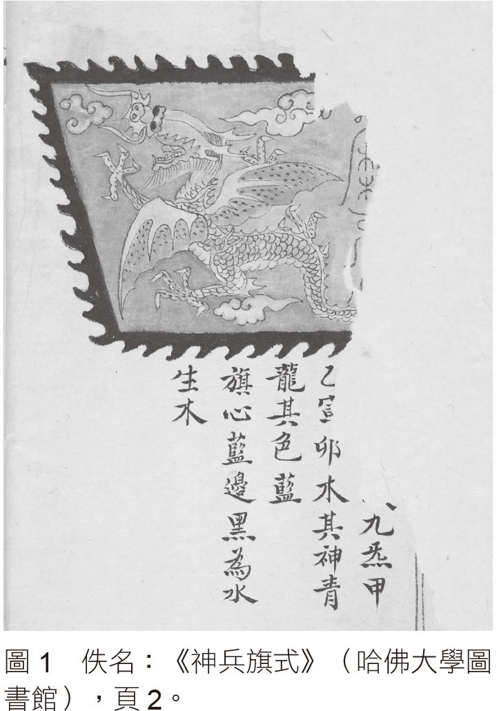
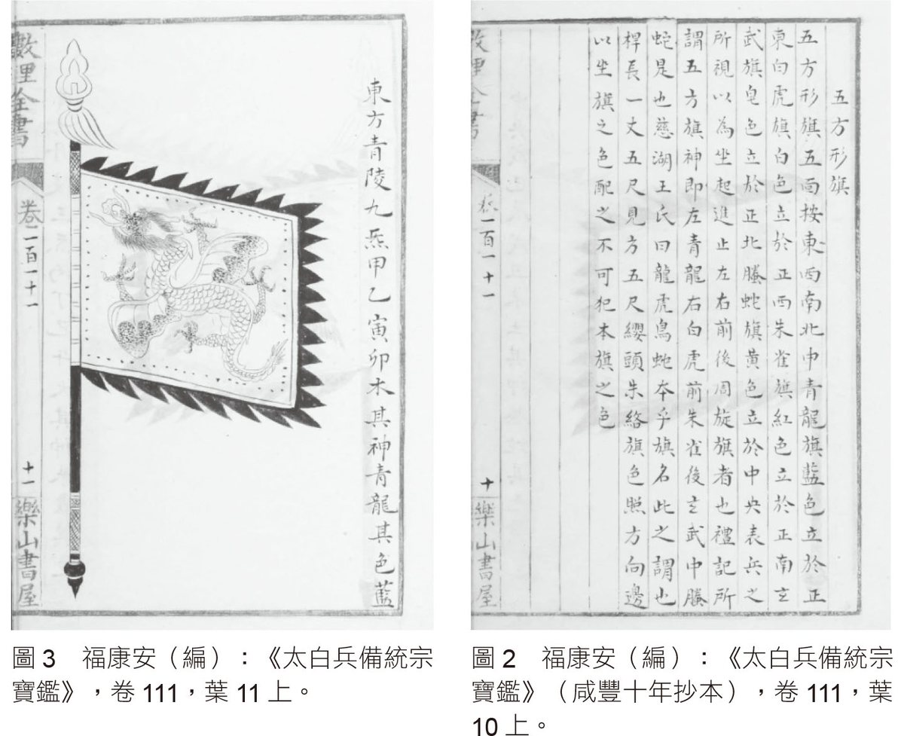
四个核心论点
读这本书时值得抓住的四条线索。
反覆无常
明清对海洋的态度并非单纯的无能或失策，而是结构性的摇摆：帝国既把讨海人与部分沿海商人划为「贱民」，又从不放弃海洋带来的利益。海禁、迁界与开海、一口通商交替出现，恰恰在缝隙里为沿海社群留出协商与创造的空间。
海洋意识
作者比照国际海事组织的「海域意识」（maritime domain awareness）提出「海洋意识」，但把重心从国家战略拉回个人：海洋、三角洲、海浪、岛屿、潮口与海湾构成的海景，如何塑造具体的人与共同体对世界的认知。
四种海洋观
对郑若曾与蓝鼎元，大海是帝国必须经营的战略边疆；对海商，海洋是财富与资源的契机；对制图师，海洋是必须缜密测绘、以图像掌握的象征性海景；对谢清高，海洋则是接触区与自由廊道。同一种水世界，在不同人身上长出完全不同的意义。
明清的延续性
作者反对「明朝曾是海军强权、清朝是孱弱海上力量」的分割叙事，主张把明清两朝共同置于海洋脉络中考察。水世界在明清中国始终是「常在的半影」——不居中心，却从未离场。
学术坐标
这本书在跟谁对话，又反对什么。
卜正民（Timothy Brook）在中文版推荐序里把本书的靶子说得很清楚：近代史学长期把海洋与陆地两极对立，费正清主编《剑桥中国史》第十二卷的导论甚至认为「海洋中国／大陆中国」只是一种「笼统的修辞」，并断言中国不愿发展海军。布琮任此书「独排众议」，主张明清两朝是实打实的海权。卜正民同时提出自己的补充看法：明朝与海洋的往来「循蒙古的『大国（Great State）』模式而来」，而这也正是布琮任把重心放在清代的原因。
在书中，作者的对话对象包括：以黑格尔为代表的「中国疏离海洋」论；滨下武志以「海洋次级体系」研究东亚互动的取径（作者认为它带来活水，却不足以引发全面的典范转移）；以费正清为源的「海洋中国／大陆中国」二元架构（他借杭行的批评指出，海洋中国其实与大陆中国共生共存）；以及「广州体系＝陈腐垄断」的旧说——借范岱克（Paul van Dyke）等修正派与高马可的研究，他主张清廷并不愿斩断与全球市场的联系，欧洲商人也宁愿到广州做生意。
与本书关系最近的是作者自己的两部前作：The Blue Frontier: Maritime China in the Qing Empire（剑桥大学出版社，2018；中文版《藍色邊疆：東亞海域中的清朝方略》，台大出版中心，2024），以及《海不揚波：清代中國與海洋亞洲》（時報文化，2021）。作者说明，本书更强调明清与海洋关系的历史延续性，并提醒近代早期的海权概念与马汉（Alfred Thayer Mahan）在十九世纪末宣扬的海权观念大不相同。
书中另有三章曾以论文形式先行发表，可知本书是长期研究的集成：〈Fortifying the Maritime Frontier: Diagrams of Coastal Garrisons (Yingxun tu) in the Qing Empire〉（Ming Qing Studies, 2022）、〈Hero or Villain? The Evolving Legacy of Shi Lang in China and Taiwan〉（Modern Asian Studies 53:4, 2019）、〈Maritime Countries in the Far West: Western Europe in Xie Qinggao's Records of the Sea〉（European Review of History 21:6, 2014）。
结构与人物
全书按时代顺序安排七段故事；除周煌外，主角都出身沿海省份——江苏、福建、广东。
-
1407 年卒陈祖义 · 第二章「海贼王」
广东人，明初纵横东南亚的海上枭雄，最终在马六甲一带被郑和舰队擒获。作者以他切入明初的海禁、朝贡与华人海上网络。
-
1503—1570郑若曾 · 第三章「幕友」
江苏昆山人，抗倭官员的幕僚，编纂《筹海图编》等成套海防图籍，其地图与测绘计划影响了朝廷的岸防方略。
-
十八世纪以来无名制图师 · 第四章「制图师」
绘制《沿海营汛界址图》一类海防舆图的无名作者。这些图以沙黄、灰蓝、浅绿区分水陆与洋面，把帝国海疆变成可视、可管理的对象。
-
1621—1696施琅 · 第五章「传奇提督」
福建人，率清朝水师于 1683 年平定台湾。他留下一封拟把台湾卖回荷兰人的秘信；此后三百年，他的形象被清代、民国、当代大陆与台湾反复重写。
-
1680—1733蓝鼎元 · 第六章「筹台宗匠」
福建漳浦人，经历康熙禁海与朱一贵事件，主张开放台湾、经营海疆，是雍正朝海洋政策的重要倡议者。
-
1714—1785周煌 · 第七章「册封使」
重庆人，乾隆朝册封副使，出使琉球并留下《琉球国志略》，是全书唯一非沿海出身的主角。
-
1765—1821谢清高 · 第八章「旅人」
广东嘉应人，年轻失明，口述海外见闻成《海录》一书；其书后来被魏源与林则徐反复引用。
章节速览
点击卡片跳到该章的详细内容。
绪论
本书的问题意识、书名比喻、叙事方法与史料基础
以海贼、海洋文人、制图师、水师将领、筹台官员、册封使与旅人等个案，论证明清中国与海洋世界始终紧密交织，反驳"中国是大陆农业国家"的定见。
海贼王
陈祖义与明初的海洋世界
以广东移民、旧港海盗头目陳祖義的兴亡为线索，说明洪武海禁如何把沿海边缘人群推向东南亚，以及永樂朝以鄭和舰队「振肃海内」、把朝贡体系投射到马六甲与巽他海峡的过程。
幕友
郑若曾与明代海防知识的生产
以屡试不第的崑山儒生鄭若曾为线索，说明明代「幕友」如何以海图、著作与实务方案参与抗倭海防，并在儒家朝贡框架内提出务实的海洋治理蓝图。
制图师
沿海营汛界址图与清帝国的海疆视野
从沈福宗的手绘华北地图谈到清代无名制图师所绘营汛图，论证清廷早已持续测绘海疆、划分内外洋，并以「海洋新清史」重估清朝的海权身分。
传奇提督
施琅的形象如何被四百年来的政治反复重写
追踪施琅形象自清代至当代在中国大陆与台湾被反复生产、诠释与政治挪用的过程，揭示历史人物如何被铸成政治叙事的工具。
筹台宗匠
蓝鼎元与康熙禁海之后的台湾
以漳浦士人蓝鼎元为线索，写他如何借平台之役与经世著述，向雍正朝廷陈说禁海之弊、台湾之重与水师之废，成为清代海洋治理的关键献策者。
册封使
周煌出使琉球与「满洲和平」
以清乾隆朝册封副使周煌及其《琉球国志略》为中心，考察册封使如何充当清帝国在东亚海域的"代理人"，并借中琉关系重估"满洲和平"下朝贡体系的实际运作。
旅人
谢清高《海录》与清人的海国想象
以广东商人谢清高的口述游记《海录》为中心，考察一位船难漂流者如何在十八世纪末亲身游历西欧，并以海洋为通道重新描绘「西洋」，从而松动传统的「普天之下」天下观。
结论
「反覆无常」与「海洋意识」的收束
以"反覆无常"与"海洋意识"收束全书，主张明清两朝必须共同放入海洋脉络理解，而非一为海权、一为陆权。
分章内容
共 9 章。每章依次给出：一句话主旨、关键词、全书位置、小节脉络、详细摘要、关键人物与概念、史料与方法、要点。
绪论
原题：第一章 緒論
本书的问题意识、书名比喻、叙事方法与史料基础
脉络
序幕
从黑格尔对中国"繁荣稳定"的赞美及其"中国疏离海洋"的论断切入，指出这类根深蒂固的看法至今仍在误导学界。传统、正统的中国史与世界史研究把中国描绘成"沉睡的巨龙"、对大海无知漠然，尤以帝制晚期为甚；除郑和七下西洋与十九世纪几场海战，中国与海洋世界似乎再无别话可说。作者承认濱下武志以各式"海洋次级体系"研究东亚互动带来活水，但认为尚不足以引发全面的典范转移。他因此提出要把晚期帝制中国"涂成蓝色"，效法1988年纪录片《河殤》走向海洋的转向，并以不同的个人与个案研究作为分析基础。时间范围定在明代（一三六八—一六四四）、清代（一六四四—一九一二）至第一次鸦片战争之前，即十四至十九世纪初的六个世纪。
台湾问题
台湾海洋史的惊心动魄事件多半始于十七世纪：西班牙人在北部短暂建立聚落，一六四二年被荷兰人赶走；郑成功（一六二四—一六六二）在一六四四年明亡后渡海击败荷兰人，建立郑氏政权。郑氏帝国虽被清朝视为"区区一群海盗"，却是货真价实的海上政权，其网络透过海运输往日本、菲律宾与大半东南亚；孔誥烽称其经三代经营已从去中心化贸易网发展为垂直整合、官僚管理的企业组织，规模堪比荷兰东印度公司，魏而思（John E. Wills Jr.）则视之为海洋军事商业强国。满洲由此领悟台湾的地缘战略重要性，康熙皇帝别无选择，一六八三年清朝水师消灭郑氏政权，台湾一度成为清帝国的一部分。日本关注台湾更早，丰臣秀吉在一五九二年、长崎代官村山等安在一六一六年先后图谋台湾而未果，直到一八九五年明治日本才在第一次中日战争中取得台湾。作者据上述材料判断：至迟自十六世纪起台湾周边已被视为连接中国与亚洲其他地方的战略走廊，要理解太平洋地缘政治秩序就必须回头看清朝两代，故第五章将以施琅为例。
珠江三角洲
珠江三角洲是理解"海洋中国"的另一个例子，自十八世纪中叶起藉由有（恶）名的廣州體系与全球市场互动；借科大衛（David Faure）的话，它是帝制中国内的边远飞地，明中叶至清中叶的大规模围垦把它改造成肥沃农地。作者提醒，常见印象把由雍正定调、乾隆正式实施的一口通商视为陈腐的壟斷制度，其源头几乎可推至乾隆一七九三年致英王乔治三世的国书——马戛尔尼使团留下的唯一成果。他对此史料的诠释特别谨慎：该信出自清朝最层峰，满人君主必须在对欧洲对造面前代表稳定、富庶而强大的亚洲帝国，截取单段据以论断定清廷外贸态度大有可议。近年修正派史家（如 Paul van Dyke 等）主张清廷始终不愿斩断与全球市场的联系，廣州體系正是为促进广州口岸贸易而精心建构，欧洲商人也多半支持并宁赴广州，季风航期与"行商"（十三行）的老练更使广州占优。高馬可（John Carroll）形容廣州體系"固然是雙方在金錢方面的利得、緊張、衝突的交鋒，但也是適應與妥協"。结论是：应把"结构失衡、运作失灵"的传统看法摆到一边，珠三角在当时甚至是中国最肥沃、最国际化的地区之一，伍秉鑒（一七六九—一八四三，"浩官"）与画家錢納利及其中国学生關喬昌（"林官"）、"順呱"（Sunqua）即为明证。
时代的结束？
作者声明本书无意主张明帝国或清帝国是海权国家，也不打算比较两者谁更能统御海洋；他更想爬梳中国与海洋世界多样的故事与连结，让一群与海洋有关的演员登台，并探究为何既有研究与一般看法总认为中国对海洋兴趣缺缺。他解释这一误解的来源：帝制晚期中国深陷政治、外交与角力论述，海洋史在其中往往等同各国海上的较劲，而一个不藉海洋对外扩张的国家就永远称不上海权国家。第一次鸦片战争虽然伤害不及亚罗号战争、第一次中日战争与庚子拳乱，象征意义却空前：史家视之为中国弱点暴露、证明无力驾驭海洋的转捩点，《南京条约》更被教科书当作中国脱离传统过去的时刻。作者的反问是：如果不把这些海战当成起点，而是看成一段尾聲呢？把目光移向这些海战之前，就会与一个繁荣、强大、叫人艳羡且与海洋关系紧密的帝国相遇；近代早期中国深受海洋世界错综复杂的影响，海洋中国与儒家模式主导的大陆中国共存、互动，以共生方式形塑政治、社会与文化发展。
统治方式的反覆无常
明清海洋世界从大局看仍受大陆式儒家世界秩序影响，这种秩序离海甚远且始终提防沿海。明清官员力图控制沿岸与海上活动，常把当地讨海人与沿岸商人打成"贱民"，有系统地排除于儒家社会结构之外，甚至不能参加科举；土地匮乏的压力则迫使部分人讨海为生或转向非法海上贸易，洪武皇帝（一三二八—一三九八）实施海禁后更为猖獗。明代大多数时间与清初的海禁将沿海居民内迁，有些地图只把内海视为中国，反映出两朝对海洋空间的矛盾心态。悖论在于，两朝心里矛盾却仍设法运用大海带来的利益，结果因海而起的偏执迫使讨海人自行发挥创意，寻找与儒家秩序协商、共存甚至参与其中的道路。作者由此勾勒两条线索：一边是生存不易的海洋社群（渔业资源减少时部分渔民更冒险转为海盗），一边是试图收割海洋利益却并非出自海洋文化的朝廷；官员必须与商人、渔民、旅人乃至海盗合作甚至讨价还价，自身也逐渐受比南京、北京、满洲更跨区域、更国际化的环境影响。他据此判断，明清两帝国与海洋的关系都呈现"开开关关"的反覆无常，时而鼓励商业与渡海（郑和下西洋、一口通商），时而全面封禁，因而创造出与周边儒家世界若即若离的海洋社群。
叙事
故事的舞台一方面是第一次鸦片战争之前的明与清中国，另一方面是跨区域的脉络，作者刻意把背景设定得尽可能明确（如某艘海盗船、某个地方衙门、某份条约或记录）。他也把明清海洋史与当下连结：清廷从未主张领有"外海"、把外海视为中国一部分或需守御的范围，故今日"一带一路"向海洋尤其是南海发展相当新颖，值得深思。方法上他不押读者在晚期帝制史的康庄大道上踢正步，而是把聚光灯打在精挑细选的人物身上，呈现海洋世界对中国、以及中国对海洋世界各自的重要意义。他坦承书中人物多半是汉人：满洲虽是十七世纪末至二十世纪初的要角，却只是少数统治族群，汉人久积海洋经验，满洲大部分海洋政策必须仰仗汉人——如同其在内亚须与蒙古人、西藏人合作以巩固力量，但海疆上的依赖程度远高于内陆，毕竟满人相对更擅长陆上"骑射"，大海并非其理想的展演场。全书按时序安排七段故事：第二章陈祖义，第三章郑若曾，第四章无名制图师，第五章施琅，第六章蓝鼎元，第七章周煌，第八章谢清高。
青龍造
书名 Shaping the Blue Dragon 意为"塑造与受塑造"：对作者选定的个人而言，海洋中国确实塑造、建构了他们的身分认同，而明清海洋政策也反过来深受这些个人直接或间接影响。他借例证说明前者：陈祖义成为海盗领袖之路由群盗肆虐的堕落海洋所形塑；郑若曾、蓝鼎元与无名制图师致力发展全面有效的方法助政府主宰、管理海洋；谢清高虽非自愿赴欧，其《海錄》成书的动机来自他视大海为四通八达、衔接海洋中国与欧洲大陆的空间。后者则见诸朝廷的岸防方略深受制图师与郑若曾影响，康熙、雍正的海防方针亦由施琅、蓝鼎元等塑造；谢清高著作虽在广东以外流传不广，却成为鸦片战争时代魏源（一七九四—一八五七）与林则徐（一七八五—一八五〇）不时引用的标记。作者进一步归纳三种海洋中国的意涵：对海盗、商人、施琅是充满机遇之处；对郑若曾、蓝鼎元与制图师是关乎国家经济与稳定、却危机四伏而须缜密管理的战略经济纽带；对谢清高等海洋文人是"开放"与"联系"，清帝国已不再是世界的中心。他并交代与另一本专书《藍色邊疆：東亞海域中的清朝方略》（The Blue Frontier，二〇一八；中文版二〇二四年由台大出版中心出版）的关联：本书更强调明清与海洋关系的历史延续性，反对给明贴海权、给清贴陆权的一刀切，并提醒近代早期的海权概念与马汉（Alfred Thayer Mahan，一八四〇—一九一四）宣扬的海权观念大不相同。
史料
本章交代全书证据基础：中国、台湾、日本、不列颠、尼德兰与美国各档案馆收藏的资料，以及陈祖义、施琅、乾隆皇帝、周煌、谢清高等人的跨区域人际网与活动记录。作者举例说明材料的跨境性质：陈祖义是跨亚洲黑市中心节点的人物，乾隆是推动清朝海洋与外交政策的最高权威，施琅则曾在一六七〇年代说服不列颠东印度公司与荷兰联合东印度公司把贸易路线拓展到福建。他特别点出一六八三年併吞台湾之前施琅致范格拉芬布呂克（Alexander van Gravenbroek）的信件，透露施琅甚至琢磨一份秘密计划，要把台湾卖回给荷兰人。主要材料藏于中国第一历史档案馆、台北中央研究院、伦敦大英图书馆与英国国家档案馆，另利用哈佛燕京图书馆、剑桥大学图书馆、莱登大学图书馆与美国国会图书馆馆藏。作者亦赴葡萄牙、澳门与广州追踪谢清高的足迹，并到福建与台南为施琅的遗绪做田野调查；他并说明在翻译、引用近代早期汉文与日文史料时加上现代标点、偶尔使用现代表达方式。
详述
本书从一个反差开始。黑格尔一方面称赞十八世纪中国是繁荣稳定、自给自足的"独一無二的帝国"，另一方面却断言中国对大海踟蹰、疏离，并把"海洋"专属挂钩于欧洲。作者指出，"中国是彻彻底底的大陆农业国家"这一根深蒂固的看法，至今仍妨碍我们考察帝制中国与海洋的往来：除了郑和七下西洋与十九世纪的海战，中国与海洋世界似乎再无别话可说。他承认濱下武志以"海洋次级体系"研究东亚互动带来活水，却认为尚不足以引发全面的典范转移。因此本书的问题意识是双重的：既要爬梳中国与海洋世界多样的故事与连结，也要解释为何世人总认定中国对海洋兴趣缺缺。
学术对话上，作者针对两套既有论述。其一是以費正清为源的二元架构——把海洋中国与外界的商业活力对立于大陆的农业、官僚导向，并把海洋中国降格为边缘支线（作者借杭行的批评点出这一点），而他主张海洋中国与儒家模式主导的大陆中国其实是共生共存。其二是"廣州體系＝陈腐壟斷"的旧说：借 van Dyke 等修正派与高馬可的研究，他指出清廷并不愿斩断与全球市场的联系，欧洲商人也宁愿到广州做生意，故应把"结构失衡、运作失灵"的看法摆到一边。与之呼应，他对乾隆一七九三年致英王乔治三世国书的处理强调诠释分寸：那是最层峰的外交文书，不能截取单段断定清廷外贸态度。他并援引裴士鋒、藍詩玲对鸦片战争记忆的讨论，主张把这些海战视为一段尾聲而非起点。
"青龍造"这一比喻的含义由此展开。传统把中国说成红龙或黄龙，意指大陆型中国；作者偏要把晚期帝制中国"涂成蓝色"，如同《河殤》呼吁的走向海洋的蓝。书名 Shaping the Blue Dragon 强调双向性：海洋中国塑造了海盗、文人、官员、制图师、水师将领与旅人的身分认同，而这些个人又反过来形塑明清的海洋政策。他据此区分三种海洋中国：对陈祖义、商人、施琅而言海洋满是机遇，可累积财富、权力与资源；对郑若曾、蓝鼎元与无名制图师而言，海洋中国是关乎国家经济与稳定的战略经济纽带，同时危机四伏、必须缜密管理；对谢清高与十八、十九世纪之交的海洋文人而言，海洋中国意味着"开放"与"联系"，清帝国已不再是世界的中心。
方法与叙事上，作者不以朝代通史铺陈，而是在精挑细选的人物身上打聚光灯，按时序串起七段故事：明代海贼王陈祖义（第二章）与海洋文人郑若曾（第三章）、十八世纪以来的无名制图师（第四章）、清初水师将领施琅（第五章）、"筹臺宗匠"蓝鼎元（第六章）、册封副使周煌（第七章），最后以旅人谢清高（第八章）作结。他强调这些角色多为汉人：满洲是少数统治族群，其海洋政策与岸防方略必须倚赖汉人的海洋知识与经验，正如经营内亚疆界须与蒙古人、西藏人合作，但海上的依赖程度更高——"骑射"虽是满洲根本，大海却非其擅场。史料上，他结合中国、台湾、日本、不列颠、尼德兰与美国各档案馆的原始材料，辅以葡萄牙、澳门、广州、福建与台南的田野调查；他也提醒明与清不应被简单贴上"海权／陆权"标签，近代早期的海权概念与马汉宣扬的海权观念大不相同，而两朝虽屡行海禁，却从未能与海洋断绝关系。
人物与概念
- 海洋中国（maritime China）
- 本书核心概念，作者定义为多面的概念建构，涵盖沿海与中国各海面之间地理、经济、文化、地缘政治元素的复杂交织，也包括与海洋世界相关的社会历史、经济与文化进程。
- 青龍造（Shaping the Blue Dragon）
- 书名所指的"塑造与受塑造"——海洋中国塑造了个人的身分认同，这些个人又形塑了明清的海洋政策。
- 黑格爾（G. W. F. Hegel，一七七〇—一八三一）
- 绪论开篇的对话对象，既赞中国为自给自足的"独一無二的帝国"，又主张中国疏离海洋、唯欧洲与海洋相连。
- 陳祖義（一四〇七年卒）
- 第二章主角，明初纵横东南亚的海贼王；其人生由海洋形塑，也牵动明廷绥靖南海的方略。
- 鄭若曾（一五〇三—一五七〇）
- 第三章主角，海洋文人，完成成套地图与测绘计划，影响朝廷岸防方略。
- 施琅（一六二一—一六九六）
- 第五章主角，率清朝水师征服台湾的水师提督；一六八三年前致范格拉芬布呂克的信件透露其秘密计划要把台湾卖回荷兰人，其功勋成为衔接清代与当代中国的桥梁。
- 藍鼎元（一六八〇—一七三三）
- 第六章主角，雍正年间人，人称"筹臺宗匠"，参与塑造康熙、雍正的海防方针。
- 周煌（一七一四—一七八五）
- 第七章主角，乾隆派往琉球王国的册封副使。
- 謝清高（一七六五—一八二一）
- 第八章主角，失明旅人，口述欧游见闻成《海錄》，后被魏源与林则徐引用。
- 鄭成功與鄭氏政權
- 一六六二年击败荷兰人，建立货真价实的海上政权，网络覆盖中国沿海、日本、菲律宾与东南亚。
- 廣州體系（Canton system）
- 雍正定调、乾隆正式实施的一口通商制度；作者主张它应被理解为适应与妥协，而非结构失衡的壟斷。
- 行商與十三行
- 广州合法贸易商群体，在与外国商人打交道方面比福州、宁波商人更老道。
- 伍秉鑒（一七六九—一八四三，浩官）
- 当时世界首富，珠三角国际化与海洋中国的代表。
- 滿汉相互依赖
- 满洲为少数统治族群，其海洋政策、水师、海防与沿海治理必须仰赖汉人的海洋经验，依赖程度高于内亚。
- 馬漢（Alfred Thayer Mahan，一八四〇—一九一四）
- 其海权观念被用作对照，说明近代早期的海权概念与十九世纪末不同。
- 《藍色邊疆：東亞海域中的清朝方略》（The Blue Frontier）
- 作者另一专书，主张鸦片战争前清朝已与海疆有政治、经济与观念的过从。
史料与方法
- 档案与图书馆收藏：中国第一历史档案馆、台北中央研究院、伦敦大英图书馆与英国国家档案馆，以及哈佛燕京图书馆、剑桥大学图书馆、莱登大学图书馆与美国国会图书馆。
- 人物中心的多语种材料：围绕陈祖义、施琅、乾隆、周煌、谢清高的跨区域人际网与活动，取自中国、台湾、日本、不列颠、尼德兰与美国各地收藏。
- 外文记录与跨公司文书：施琅一六七〇年代说服不列颠东印度公司与荷兰联合东印度公司拓展福建贸易路线，以及一六八三年前致 Alexander van Gravenbroek 的信件。
- 田野调查：赴葡萄牙、澳门、广州追踪谢清高足迹，赴福建与台南追寻施琅遗绪。
- 方法论特点：以个人与个案研究为分析基础，先设定明确的时空背景（一艘海盗船、一个地方衙门、一份条约或记录），再由下而上与由上而下交织叙述。
- 史料处理的自觉：提醒乾隆致英王国书不能截取单段解读；翻译引用近代早期汉文与日文史料时加上现代标点，偶尔使用现代表达方式。
要点
- 「歐洲國家唯有跟海洋聯繫在一起，才稱得上是正港歐洲國家」——黑格尔之语，见"序幕"，作者以此对照中国被想像为疏离海洋。
- 「我選擇在本書裡用不同的方式講故事，試著把晚期帝制中國塗成藍色。」——"序幕"，全书的取径宣示。
- 「本書無意主張明帝國或清帝國是海權國家」——"时代的结束？"，作者界定论证边界。
- 「如果我們重新詮釋這些海戰，不是把它們當成起點，而是看成一段尾聲呢？」——"时代的结束？"，全书时间框架的关键反转。
- 高馬可论廣州體系：「固然是雙方在金錢方面的利得、緊張、衝突的交鋒，但也是適應與妥協」——"珠江三角洲"。
- 「滿人仰賴漢人來治理海疆，就像他們在管理內陸疆界時也要仰賴其他亞洲社群，但前一種依賴的程度遠高於後一種」——"叙事"。
- 清廷「從未主張領有『外海』」——"叙事"，用以说明今日"一带一路"向海洋发展相当新颖。
- 施琅在一六八三年併吞台湾之前「琢磨一份祕密計畫，要把臺灣賣回給荷蘭人」——"史料"，见其致范格拉芬布呂克的信。
海贼王
原题：第二章 海賊王
陈祖义与明初的海洋世界
脉络
古早进前伫南京
一四〇五年，工匠、造船匠、铁匠、测绘员、水手两万余人云集南京，在秦淮河与长江交汇口、约当今日江东街道三叉河一带兴建近千亩（约六十六万平方米）的巨型船厂，内有七座长码头、同时可造百艘以上船只，木材由云南、江西、湖广、四川的森林转运网而来。作者引卜正民等指出，永樂帝好比忽必烈，急于向海洋世界宣告自己是中国之君，要以「示中國富強」的庞大外交使团前往「西洋」朝贡国。指挥官钦点宦官鄭和（本名马和，昆阳穆斯林家庭，十岁被俘）；袁忠徹《古今識鑒》形容其「身長九尺，腰大十圍」，赐姓「郑」而非「朱」的原因文中称未有定论。一四〇五年七月十一日一下西洋启航：三百一十七艘船、六十艘配备火炮的宝船、近两万八千人，航抵柯枝与古里；作者一方面比较宝船与哥伦布三船，一方面在注中承认宝船确切尺寸仍无定论。
陳祖義与洪武皇帝
陳祖義为广东潮州人，生平第一条记录来自明朝廷官方文书：一三八〇年代随家人移居东南亚、在马六甲落脚，确切年份不详。作者把视角拉回洪武朝：一三七一年颁「海禁」法，皇帝称「寸板不許下海」；一三七三年《皇明祖訓》进一步主张限制与「僻在一隅」诸夷的接触。此为转折点——此前近四百五十年私人海上贸易得以进行（元廷鼓励海贸近一世纪，唐宋更不待言），此后大多数海上活动皆属违法，无法遵守规定者被当成海盗或逃犯处置。但作者强调海禁不等于禁绝一切海贸：引孙隆基之说，封锁沿海并未中止与东南亚、南亚、西亚的活络贸易，只是变成「国家独占」；《大明律》允许官府监督下的小生意，朝廷要打压的是伤害国家的「大生意」。洪武以朝贡体系规范小型海贸（卜正民、王賡武之说），并力求根除一切可能挑战其「统御波涛」权力的非法活动。作者采蕭婷的解释：海禁是缜密的政治举措，经济考量对明初政府与国防同样重要，目的是防止張士誠、方國珍一类富商威胁王朝威信，而非出于对海洋的反感。沿海的蛋戶、島人、賈豎、漁丁本已边缘，部分更被划为「贱民」，于是在十四世纪晚期掀起由广东、福建移往东南亚的移民潮，陳祖義即其中之一。
富贵险中求
本节铺陈目的地室利佛逝（唐文献称室利佛逝、宋称三佛齊、中世纪阿拉伯文献称 Zabaj）：七世纪已凭马六甲与巽他海峡的地利成为东南亚经济强权，两大权力中枢巨港与穆阿羅占碑分居穆西河与巴當河畔，另有北根、林佳、哥打卡普、巴奈、南浡里。唐以后汉人短居、定居者渐多，海上丝路的瓷器珠宝贸易令此处获利甚丰；十一世纪遭南印度朱羅帝國反复攻击而衰落，十三世纪末爪哇信訶沙里科塔尼伽拉王攻陷巨港与穆阿羅占碑，室利佛逝一蹶不振，十四世纪爪哇人、暹罗人与獅子城人混战不休。作者以「富贵险中求」解释：动乱并未使移民离开，反而被视为机会。马欢《瀛涯勝覽》记洪武年间「陳祖義等全家逃於此處」，其后自号旧港头目，「凡有經過客人船隻，輒便劫奪財物」；据注释，他一三九八年自立为巨港头目，正值拜里迷蘇剌王因滿者伯夷海军入侵而逃离巨港之时。作者并归纳东南亚海盗长盛的四项因素：超过两百五十座岛礁滩洲可供藏匿、两条海峡是航运要道、气候和煦终年可作案、十四世纪马来世界政治不稳；引一九九三至二〇一五年统计称全球海盗事件近六成发生在东南亚（西印度洋百分之二十八、西非百分之十八）。拜里迷蘇剌雇用「海人」（Orang Laut）巡逻打击海盗，而海人族群自身素有凶残之名。孔飛力（Philip Kuhn）之说被引以区分欧洲殖民体制进入前东南亚的两类唐人聚落：商业中介者，以及由法外之徒或政治难民组成的自治武装领土政权。
三佛齊王梁道明
一三九七年，正当拜里迷蘇剌王穷于应付滿者伯夷大军时，「閩、粵軍民」推举梁道明为领袖，「泛海從之者數千家」；梁为广东南海人，洪武初年携家流寓马来半岛，居巨港多年，被推举后成为三佛齊王、人称道明王，部属由千名汉人增至数千。永樂三年，成祖以行人譚勝受与梁同邑，命偕千戶楊信赍敕招之，梁道明及党鄭伯可入朝贡方物、受赐而还（《明太宗實錄》《明史》）。作者指出诏书时间正与宝船舰队成军同年，推测皇帝想争取海外汉人拥戴；虽说郑和下西洋是和平任务，但明廷积极把海上影响力投射到具战略与商业价值的航道口岸，难怪有人比之于今日「一带一路」。永樂与洪武的分野被概括为：父亲把海疆当屏障，儿子把大海当舞台；但私人贸易仍受严格限制，外商只能趁随贡使来朝时做「規模與頻率皆有限」的私人买卖（John E. Wills Jr.），大海仍不能自由贸易。一四〇六年一条史料同时记旧港头目陳祖義遣子士良、梁道明遣从子观政来朝；《明史》称陳祖義「雖朝貢，而為盜海上，貢使往來者苦之」，作者据此读出明廷与陳祖義的紧绷，以及朝廷把海上秩序置于促进跨区域贸易之上。本节末把明清并置：两朝都是先长期海禁、待沿海经济不容乐观才以战略考量重振，印证帝制晚期中国与海洋「反复无常」的关系。
巨港戰役：前因后果
陳祖義麾下五千人与大量船舰，实力不亚于梁道明，活动范围不限马六甲海峡，据说远及台湾海峡。作者注意到一条史料同时称两人为「舊港頭目」，推测二人可能同时掌权；一四〇六年后明史料再未出现梁道明，故推测陳祖義取代之而称霸巨港，两派人马相处不融洽。《瀛涯勝覽》记永樂五年鄭和宝船到旧港，施進卿（广东人，洪武年间来巨港，曾为梁道明忠实手下）来报「陳祖義凶橫等情」。作者由此推断陳祖義虽凶悍却未获海外汉人各界全面支持，这给了明廷插手的根据与借口。《明太宗實錄》载鄭和先「遣人招諭之」，陳祖義「降詐降，而潛謀要卻官軍」，鄭和觉察整兵，陳祖義率众来劫而大败：杀贼党五千余人、烧贼船十艘、获七艘及伪铜印二颗，生擒三人，「既至京師，命悉斬之」。作者的核心判断是：鄭和并非在苏门答腊偶遇陳祖義，与其打交道早已写在行程里；鄭和原意是协商而非用兵，巨港之战「本来可免」；陳祖義先诈降后偷袭，或因情报外泄、缺乏可靠情报，也可能是托大——「投机有余，策略不足」。战后永樂「就賜施進卿冠帶」，施「歸舊港為大頭目，以主其地」，马欢记其位本可传子，却「本人死，位不傳子，是其女施二姐為主」；施進卿遣婿丘彥誠朝贡，朝廷设旧港宣慰使司、命其为宣慰使。作者引陈育崧、富路特、房兆楹指出施進卿亦为穆斯林，或为鄭和信任他的原因。费信《星槎勝覽》称此役「由此海內振肅」；罗荣邦则列举鄭和加官施進卿、掳回锡兰王与北苏门答腊巴塔克人统治者、形同建立马六甲王国作为海军基地、巨港由中国总督统治、吕宋有中国官员派驻。作者引杰夫・魏德「海洋原型殖民体制」之说，同时呈现蕭婷的反对意见——界定殖民国家所需的政治经济内涵并不存在于明乃至整个帝制中国。作者自己的补充是：永樂很愿意把统治力延伸到东南亚沿海社群，却对允许中国沿海社群经商踌躇不决，反映朝廷不愿承受风险，洪武式「跟海洋保持安全距离」的做法仍清晰可见。
小结
陳祖義因战略失误垮台，船队在巨港几乎全毁，五千余名以广东裔为主的手下不是被折磨就是被杀；作者称这是亚洲海洋史上大明与海外汉人社群间最惨烈的一次交手。在他看来，鄭和本有意协商，关键在陳祖義下了一步坏棋，攻击宝船舰队；这一仗本可免，紧张关系本可在谈判桌上缓和。作者同时拒绝浪漫化：陳祖義是会随便杀人、为钱折磨人的粗暴领袖，引卡尔・马克思评价资本主义「最好的东西与最坏的东西」并存之语，主张以类似的「割裂意识」理解海盗——群众崇拜，统治当局则视之为必除之敌。全章总结：把一名海盗头目的「罪行」及其后果放进涵盖中国、东南亚与部分印度洋的跨区域脉络；讲明朝与大海不能只有郑和下西洋，明初朝廷与海外汉人之间复杂的关系也不该忽略。陳祖義的兴衰在历史大势中虽如瞬间火花，却足以点燃整个区域，是海洋中国与东南亚史上的「引火棒」。
详述
一四〇五年的南京是本章的起点，却不是主角。永樂帝为一下西洋在秦淮河与长江交汇处建起近千亩船厂，木材取自云南、江西、湖广、四川的森林，两万余名工匠水手日夜赶工；七月十一日，三百一十七艘船、近两万八千人启航，直指「西洋」的柯枝与古里。作者随即把镜头转向马六甲以东：广东潮州人陳祖義以旧港海盗头目之身，成为东南亚最令人闻风丧胆的人物——本章要写的正是被「大航海家」叙事遮蔽的另一面。
理解陳祖義须回到洪武朝。一三七一年海禁颁行，皇帝称「寸板不許下海」，一三七三年《皇明祖訓》再限制与「僻在一隅」诸夷的接触。此前近四百五十年私人海上贸易从未中断，此后大多数海上活动顿成违法，抗命者被当作海盗或逃犯。但作者指出，海禁不等于禁绝一切海贸：引孙隆基之说，封锁沿海只是让贸易变成「国家独占」，《大明律》仍容许官府监督下的小生意；采蕭婷的解釋，海禁是缜密的政治举措，为的是防止張士誠、方國珍一类富商威胁王朝威信。代价由沿海承担——蛋戶、島人、賈豎、漁丁本已边缘，部分更被划为「贱民」，于是十四世纪晚期出现广东、福建移往东南亚的移民潮。陳祖義落脚于曾由室利佛逝称霸、此时因朱羅帝國与爪哇信訶沙里入侵而动荡的旧港；作者以「富贵险中求」概括这批人的选择，并列出东南亚海盗长盛的条件（岛礁密布、两条海峡为航运要道、气候终年可作案、马来世界政局不稳）。
关键事件由此展开。一三九七年，「閩、粵軍民」推举广东南海人梁道明为领袖，「泛海從之者數千家」，他成了三佛齊王；一四〇三年永樂遣譚勝受、楊信招之，梁道明入朝贡方物。一四〇六年，旧港头目陳祖義遣子士良来朝，但《明史》记他「雖朝貢，而為盜海上，貢使往來者苦之」；此后梁道明从史料中消失，作者推测陳祖義取代其位。一四〇七年鄭和舰队抵旧港，曾是梁道明手下的施進卿前来告发陳祖義凶横，明廷于是有了插手的根据。据《明太宗實錄》，鄭和先「遣人招諭之」，陳祖義「降詐降，而潛謀要卻官軍」，鄭和察觉后整兵迎战，陳祖義大败：被杀党众五千余人，船舰或被烧或被获，他与三人被生擒，解至南京处斩。作者的解释是：鄭和并非在苏门答腊偶遇陳祖義，确保马六甲与巽他海峡、与这位海商—海盗打交道，本就写在行程里；鄭和原意是协商，巨港之战「本来可免」，而陳祖義先诈降后偷袭，或因情报外泄、缺乏可靠情报，也可能是托大，总之「投机有余，策略不足」。战后永樂赐施進卿冠带，命其「歸舊港為大頭目，以主其地」，又设旧港宣慰使司任其为宣慰使；其位本可传子，实际却由女儿施二姐主政。
本章的修正之意正在于此。其一，不能把明初海商一律看作「海盗」：陳祖義是被海禁与朝贡框架挤出中国的沿海人群的代表，他的「罪行」客观上为经海路衔接中国与东南亚的黑市建立了秩序，因此他既是杀人越货的罪犯，也是海外汉人眼中的豪杰——作者引马克思论资本主义「最好的东西与最坏的东西」并存，主张以同样的「割裂意识」看待海盗，拒绝过度浪漫化。其二，对「郑和下西洋是和平任务」的通行叙事，作者既呈现杰夫・魏德的「海洋原型殖民体制」之说（以武力或威吓掌控重要港口政体与海域），也呈现蕭婷的反驳（界定殖民国家所需的政治经济内涵不存在于明乃至帝制中国），并指出永樂的态度自相矛盾：很愿意把统治力延伸到东南亚沿海社群，却对允许中国沿海社群经商踌躇不决，洪武式「跟海洋保持安全距离」的思维仍在。其三，明廷对海外汉人近乎不干预，既不鼓励其归国，也不当他们是帝国臣民，只把他们纳入朝贡体系接受入贡并回赐保护与认可。作者的总结是：讲明朝与大海，不能只有郑和下西洋；明初朝廷与海外汉人之间的关系错综复杂，陳祖義的兴衰虽如瞬间火花，却足以点燃整个区域，是海洋中国与东南亚史上的一根「引火棒」。
人物与概念
- 陳祖義
- 广东潮州人，洪武年间随家人移居东南亚，后自号旧港头目，劫掠往来船只，一四〇七年巨港之役兵败被擒，解送南京处斩。
- 梁道明
- 广东南海人，一三九七年被「閩、粵軍民」推举为领袖，称三佛齊王（道明王），一四〇三年入朝贡方物；作者不愿给他贴海盗标签。
- 施進卿
- 广东移民，原为梁道明手下，向鄭和告发陳祖義凶横；战后获赐冠带、任旧港宣慰使，其女施二姐（亦称施大娘、锦石大娘子俾那智／Nyai Gede Pinatih）在其死后主政。
- 鄭和
- 本名马和，昆阳穆斯林家庭出身，十岁被俘入明，永樂钦点的舰队统帅；作者推断其一下西洋任务包含与陳祖義打交道、确保马六甲与巽他海峡关键水道。
- 洪武海禁
- 一三七一年颁行，皇帝称「寸板不許下海」，一三七三年《皇明祖訓》再加限制；作者与蕭婷均视之为政治举措而非单纯反商。
- 朝贡体系
- 以中国为中心的「朝贡—册封」外交与贸易关系，按洪武看法是「恩准而不是鼓励」，不以利润为基础。
- 舊港／巨港（Palembang）
- 苏门答腊岛上的港口城市，室利佛逝旧地，陳祖義与梁道明势力所在，战后设旧港宣慰使司。
- 室利佛逝／三佛齊
- 七世纪兴起的东南亚海上强权，控制马六甲与巽他海峡，十一世纪遭朱羅帝國攻击、十三世纪末被爪哇信訶沙里征服后衰落。
- 海人（Orang Laut）
- 马六甲一带原住民族群，受拜里迷蘇剌雇用巡逻打击海盗，自身在历史上亦以凶残著称。
- 旧港宣慰使司
- 战后明廷在旧港设立的机构，施進卿任宣慰使，「以主其地」，赏罚黜陟皆从其制。
- 海洋原型殖民体制
- 杰夫・魏德用语，指海上霸权以武力或威吓掌控重要海上贸易网的主要港口政体及海域，以取得经济与政治利益；蕭婷反对以此界定明廷行为。
史料与方法
1. 中国官方实录与正史为主干：大量引用《明太宗實錄》（卷三十八、五十六、七十一等）与《明史》（卷三〇四、卷三二四），另及《明太祖實錄》《皇明祖訓》《大明律》，用以重建海禁法令与巨港之役的经过。
2. 随行者的亲历记录：马欢《瀛涯勝覽》提供陳祖義「全家逃於此處」、劫夺客船、施進卿报信、永樂赐冠带与施二姐继位等关键情节；费信《星槎勝覽》提供「由此海內振肅」的官方视角。
3. 明清笔记与政书补充：如张燮《東西洋考》记巨港战役后续，袁忠徹《古今識鑒》记鄭和形貌，傅维麟《明書》记其性格。
4. 东南亚史与考古材料：室利佛逝的兴衰、巨港与穆阿羅占碑的地位、拜里迷蘇剌与滿者伯夷的冲突等，引自 Wolters、Ricklefs 等东南亚史研究；海域地理与港口材料亦取自该领域专著。
5. 二次文献的对话与修正：作者在正文与注释中密集与卜正民、王賡武、蕭婷、孙隆基、孔飛力、罗荣邦、杰夫・魏德、Wills 等对话，既借其框架也提出保留（如宝船尺寸、赐姓郑之因、殖民主义的适用性）。
6. 跨时段与量化对照：以一九九三至二〇一五年全球海盗事件分布（东南亚约六成）证明东南亚水域问题的延续性，并以《大明律》条文说明海禁的实际范围。
要点
- 「寸板不許下海」——洪武皇帝语，见「陳祖義与洪武皇帝」小节引《明太祖實錄》。
- 「即便封鎖沿海地區，也不至於中止跟東南亞、南亞與西亞之間活絡的海上貿易，只不過現在變成國家獨占」——引孙隆基，用以修正「明代全面禁海」的印象（「陳祖義与洪武皇帝」）。
- 「凡有經過客人船隻，輒便劫奪財物」——马欢《瀛涯勝覽》记陳祖義自号旧港头目后的行径（「富贵险中求」）。
- 「祖義，亦廣東人，雖朝貢，而為盜海上，貢使往來者苦之」——《明史》语，作者据此读出明廷与陳祖義之间毫无讨论空间的紧绷关系（「三佛齊王梁道明」）。
- 巨港之役战果：杀贼党五千余人、烧贼船十艘、获七艘及伪铜印二颗，生擒祖义等三人，「既至京師，命悉斬之」（《明太宗實錄》，「巨港戰役：前因后果」）。
- 「由此海內振肅」——费信《星槎勝覽》对鄭和击败陳祖義的评价，作者视为明廷把国力投射到两条海峡并加以巩固的宣言（「巨港戰役：前因后果」）。
- 作者的核心论断：鄭和原意在协商、巨港之战「本来可免」，陳祖義「投机有余，策略不足」（「巨港戰役：前因后果」「小结」）。
- 作者的方法宣告：不可过度浪漫化海盗，应以「割裂意识」同时看见群众崇拜的豪杰与为钱杀人的罪犯；全章要把陳祖義的「罪行」放进跨区域脉络，证明讲明朝与大海不能只有郑和下西洋（「小结」）。
幕友
原题：第三章 幕友
郑若曾与明代海防知识的生产
脉络
付之一炬
从郑和下西洋被叫停说起：1433年明廷停止远航，焚毁系留船只并销毁相关档案；1480年成化朝大璫汪直欲远征安南，却找不到郑和的航海日志，賀東勱（Thomas O. Höllmann）考证兵部正是销毁者，嚴從簡《殊域周咨錄》记「兵部尚書項忠命吏入庫檢舊案不得」。曾任兵部尚书的劉大夏主张这些记录夸大失实、无益于本土知识，故应销毁。作者由此归纳学界三种解释：洪熙朝回归洪武式保守儒治、远航耗竭国库、蒙古与中亚势力威胁西北边陲。其后果是海防空虚、水师衰败，謝杰《虔臺倭纂》指出海禁执法「过严」与「过弛」两难，这些「海上渣滓」便是汉文所称的「倭寇」。
倭寇
本节先破「倭」字的单一国籍含义：15至16世纪末的中国海盗群体具有鲜明的多民族特征，中国、朝鲜乃至葡萄牙的水手、商人、渔民都曾假冒倭寇。胡宗憲开列的十余个海盗派系领袖「统统不是外国人，反而全都是本国商人」；姜寶指出船主与出资者亦皆汉人；宋怡明（Michael Szonyi）引地方官估计「外盗」中真夷人不到十分之一，却有二成来自琉球。王鳴鶴的名言「寇与商，同是人也」说明身分随市禁而翻转。作者进一步指出，倭寇问题也是沿海社群的内部社会问题：渔民、舟商、下层兵丁与非法贸易牵连，地方人脉为海盗提供粮食、船只、人力与情报。
崑山鄭氏
主角出场：1503年生于崑山，此处属长江三角洲核心，吴淞江穿城而过，周边是圩田与澱山湖、阳澄湖等水网，也是歸有光、龔賢、顧炎武的故乡。鄭氏世居崑山可溯至北宋，代代行医而尤擅妇科；曾祖鄭文康于1448年中进士、授大理寺，后入祀苏州沧浪亭五百名贤祠。鄭若曾从父及魏校受学，与歸有光同窗并同娶师门之女；1536年三十三岁中秀才，却在1536、1540两度乡试落第，转而讲学，并因不满嚴嵩而刻意与官场保持距离。友人胡松记其「有志匡時，而阨於命」；海盗威胁故乡后，他才走入胡宗憲幕府。
深耕
以柳詒徵《柳翼謀先生文錄》所附〈鄭開陽雜著跋〉为引，讨论《籌海圖編》的著作权：《四庫書目》归之胡宗憲，嘉靖本（今藏北京图书馆）是唯一提及鄭若曾的版本，另有隆庆、天启两版。作者据茅坤序与今人研究认定鄭若曾是总策划与主要撰写者，胡宗憲不过「综其成」，丹阳邵芳亦参与体例。随后逐卷解读：卷一概观形势，卷二以《日本國圖》《日本島夷入寇之圖》配合日本编年事略并标出十四条海道，卷三至卷八分省区论述广东、福建、浙江、直隶、山东、辽阳的沿海地理与兵防，卷八有《嘉靖以來倭移入寇總編年表》与《寇踪分合始末圖譜》，卷九记嘉靖朝十三场大捷，卷十则专卷纪念阵亡者。
大哉問
约1555年倭患正炽，朝廷激辩海禁与海盗的因果关系，核心问题是「是否开海」，兼及财政结构。《明經世文編》称「寧紹十五、漳泉福人十九」，而头目多为汪直、徐海率一类汉人豪商。鄭曉、趙文華、唐順之（以开矿为喻）、唐樞（主张特许与指定口岸，后于月港落实，与清代广州体系相似）倾向调整或开放；萬表、朱紈则认为海禁执行不力才是乱源。鄭若曾反对简单二分：他区分贡舶、市舶、商舶、寇舶，主张不能「混而言之」，问题不在开或禁，而在中日双边关系须采取有目的导向的做法。張時徹、馮璋亦质疑开海成效。作者借林美玲（Ivy Lim）之说提醒，不可把反对全开海者一概打成「陆地思维」。
小結
鄭若曾以幕友身分走上一线，与江南才俊共事，其处方不是放弃朝贡体系、拥抱自由市场，而是以更缜密的监管与更有效的治理恢复原有秩序。〈重刻籌海圖編跋〉证明其后《籌海重編》《海防類考》《海防纂要》皆「于是书取衷」，可见其知识传承效应。作者强调不应把儒家正统与海洋取向视为不可调和的两极：儒生身分并未妨碍鄭若曾构思合理的「靖海」蓝图，而这股与海洋啮合的学术潮流一直影响到盛清。
详述
本章主角是「幕友」——受官员私人延聘、无正式官职的幕宾与顾问，代表人物是崑山儒生鄭若曾（1503年生）。他出身世医望族，曾祖鄭文康1448年中进士；从父及魏校受学，与歸有光同窗，两度乡试落第后在崑山讲学，并因厌恶首辅嚴嵩而屡拒荐举。1552年前后他感到薛俊《日本考略》等旧研究已不合时用，经近三年踏查完成评估与十二幅海图，编为《沿海圖本》，成为1561年《籌海圖編》与1568年《江南經略》的基础。因浙江巡抚胡宗憲赏识而入其幕府，亲自站上抗倭前线——这正是幕友以非正式身分影响国家战略的关键。
明代海防的情境源于一次体制性的自我割断：1433年明廷叫停郑和远航，焚船毁档；1480年汪直欲远征安南，竟在兵部找不到郑和的航海记录，劉大夏更主张这些文件夸大失实而应焚毁。作者归纳三种解释——洪熙朝儒治保守化、宝船舰队财政负担、蒙古与中亚对西北的威胁，结果是水师衰落、岸防薄弱，海禁执法陷入謝杰所说的过严与过弛两难。明代的对策是陆基岸防：要塞、墩堠与哨站；茅海建指出这些工事多为远离海岸的小型堡垒，魏而思视之为守势原则。作者把这种选择放进欧亚脉络（英国Device Forts、马耳他岸塔等），强调成败关键在于选址与维护，而维护的前提正是详细测绘海岸。
崑山鄭氏与江南士人圈共同构成知识生产的网络。崑山地处长江三角洲核心，郑家世居于此、世代行医而尤擅妇科；与鄭若曾往来的胡宗憲、徐渭、文徵明、唐順之、茅坤、邵芳等人多在下游任官，对海洋事务的态度与「大陆心态」官员不同。《籌海圖編》的著作权纠葛正显示这种集体性：《四庫書目》归书于胡宗憲，三版中只有嘉靖本提到鄭若曾，茅坤序称胡宗憲「聘君墓府，裒次其事」，体例多出邵芳，作者判定鄭若曾是总策划与主要作者。全书十三卷由总图、日本入寇图、分省沿海兵防、编年表与《寇踪分合始末圖譜》、大捷纪、阵亡者列传构成，是地理知识、历史编年与情感动员的结合。
作者借此说明的治理与传承机制有二：视觉化、编年化的知识整理，以及士人圈跨世代的再生产。鄭若曾用《嘉靖以來倭移入寇總編年表》梳理四十六年间二十二起重大入侵，以图谱追索徐海率等人的根据地与劫掠路线；卷九以「天威」叙述十三场大捷，实为建构大明与海上蛮贼之间的文化界线；卷十打破官位等级，按时间平列水师将校、地方官、孝子与慈谿农夫吴德四、吴德六等平凡牺牲者。〈重刻籌海圖編跋〉表明《籌海重編》《海防類考》《海防纂要》皆自此书取衷；这批士人也把倭寇与日本人长期妖魔化。
对「倭寇」叙事的修正贯穿全章：海盗群体是多民族的，但胡宗憲列出的派系领袖统统不是外国人，姜寶指出船主与出资者亦皆汉人，宋怡明引地方官估计真夷人不足十分之一；王鳴鶴「市通则寇转而為商，市禁则商转而為寇」点出身分流动。海禁辩论也非开海与禁海两派对立：鄭曉、趙文華、唐順之、唐樞倾向开放或管理性开放（唐樞方案后在月港落实，与清代广州体系相连续），萬表、朱紈主张更严格执法，張時徹与馮璋怀疑开海能否止寇。鄭若曾拒绝二选一，区分贡舶、市舶、商舶与寇舶；嘉靖帝仍守祖制，直到1567年隆庆才许贩东西二洋，且仅限泉州、漳州商人。作者反对以「保守」「陆地思维」简化他。
人物与概念
- 鄭若曾（1503—？）
- 崑山儒生、幕友、制图师，本章主角；著《沿海圖本》《籌海圖編》《江南經略》，无一官半职而入胡宗憲幕。
- 胡宗憲（1512—1565）
- 浙江巡抚，抗倭中坚，延揽鄭若曾入幕；《四庫書目》误以《籌海圖編》为其所著。
- 幕友（幕宾）
- 官员私人延聘、无正式官衔的顾问与智囊，鄭若曾以此身分参与国家级海防决策。
- 倭寇
- 15至16世纪末侵扰中国沿海的海盗群体，实为多民族混成，成员与首领多为中国商人、渔民与下层兵丁。
- 海禁／互市／朝贡体系
- 明代限制民间海上贸易的祖制；鄭若曾区分贡舶（王法所许）、市舶、商舶（王法不许）与寇舶，反对混为一谈。
- 《籌海圖編》
- 十三卷海防专著，含日本图、入寇图、分省沿海兵防、编年表、寇踪图谱、大捷纪与阵亡者列传；有嘉靖、隆庆、天启三版。
- 《沿海圖本》
- 鄭若曾早期成果，含十二幅海岸图，为《籌海圖編》《江南經略》之基础。
- 崑山鄭氏
- 崑山世医家族，尤擅妇科；曾祖鄭文康1448年进士，入祀苏州沧浪亭五百名贤祠。
- 邵芳
- 丹阳人，《籌海圖編》体例多出其手，与鄭若曾合辑。
- 茅坤（1512—1601）
- 士人圈成员，为《籌海圖編》作序，记胡宗憲赏识鄭若曾之经过。
- 月港／海澄
- 1567年隆庆开海后获准通东西二洋的口岸，同年改名海澄；与清代广州体系相呼应。
- 《寇踪分合始末圖譜》
- 追索徐海率等海盗首领出身与活动位置的图谱。
- 徐海率
- 汉人海盗首领，以日本萨摩、肥后、津州、对马为根据地，1556—1557年连续攻击浙苏城镇。
史料与方法
- 以鄭若曾本人的著作与序跋为核心史料：《籌海圖編》（含钦定四库全书版与李致忠点校本）、《江南經略》，以及茅坤、胡松、范惟一、鄭起泓等序跋。
- 大量使用明人文集与奏议：《明經世文編》（鄭曉、姜寶、唐順之、唐樞、馮璋等）、萬表《海寇議》、謝杰《虔臺倭纂》、嚴從簡《殊域周咨錄》、王鳴鶴《登壇必究》、趙文華《趙氏家藏集》。
- 家族与传记材料：鄭定遠〈先六世貞孝先生事述〉、張大復〈鄭介菴先生傳〉、柳詒徵《柳翼謀先生文錄》所附〈鄭開陽雜著跋〉。
- 版本学与著作权考证：比对嘉靖、隆庆、天启三版《籌海圖編》，讨论四库题名与嘉靖本提及鄭若曾的差异，判定其总策划地位。
- 跨区域比较方法：把明代岸防置于欧亚脉络（Device Forts、马耳他两塔、瓦尔迪维亚联堡、芬兰堡），同时引用茅海建、魏而思说明明廷的守势原则。
- 情感史与史学史方法：借「情感出于认知体系」的框架重读卷十阵亡者列传；并借丹尼尔・伍尔夫论中国史学重编年的特点解释鄭若曾的编年表。
- 学术史回顾：从1983年汪向榮的论文、富路特与房兆楹《明代名人傳》条目，到1990年代「战术家」、2000年代「最早标出釣魚臺的制图师」乃至主权论述的升温。
要点
- 「寇与商，同是人也。市通则寇转而為商，市禁则商转而為寇。」——王鳴鶴《登壇必究》，出自〈倭寇〉节，点出身分流动。
- 「今之论御寇者，一则曰市舶当开，一则曰市舶不当开。愚以為皆未也。」——鄭若曾论海禁，出自〈大哉問〉节；他进而区分贡舶、市舶、商舶、寇舶四事。
- 胡宗憲所列十余海盗派系领袖「统统不是外国人，反而全都是本国商人」；宋怡明引地方官估计真夷人不到十分之一——〈倭寇〉节对「倭寇」国籍叙事的直接修正。
- 「夫由海商之事观之，病于海禁之过严；由竈戶之事观之，若咎论通倭，于海禁之过弛。」——謝杰《虔臺倭纂》，〈付之一炬〉节，说明海禁执法的两难。
- 劉大夏主张销毁郑和档案，理由是其中「窝藏对遥远异域的夸饰与失实描写」，无益于本土知识——〈付之一炬〉节，明代退出海洋的体制性证据。
- 「有志匡時，而阨於命。親在圍城，竊觀當世舉措，有慨於中，念欲記載論著，貽之方來。」——胡松〈籌海圖編序〉引，说明鄭若曾著书的动因是海洋危机。
- 嘉靖始终守海禁祖制，直到1567年（《籌海圖編》刊行后一年）隆庆才「许贩东西二洋」，且仅限泉州、漳州商人，中日贸易仍禁绝——〈大哉問〉节，开海的限度。
- 〈重刻籌海圖編跋〉列《籌海重編》《海防類考》《海防纂要》「咸于是书取衷」，并称「无不曰崑山鄭某有《籌海圖編》若干」——〈小結〉节，知识传承的明文证据。
制图师
沿海营汛界址图与清帝国的海疆视野
脉络
沈福宗的地图及其他
以2022年11月大英图书馆为期五个月的「華英之間」（Chinese and British）展览切入，指出展中醒目位置摆放一张手绘华北地图，作者是圣名彌額爾・雅風（Michael Alphonsus）的沈福宗（约1658—1691），有史可稽第一位造访联合王国的华人（1687年，即大清水师併吞臺灣后四年）。他由法蘭德斯耶稣会士柏應理（Philippe Couplet）携往欧洲，历经巴黎、罗马，曾在凡尔赛宫面见路易十四、在罗马面见教宗依諾增爵十一世，抵伦敦后受博德利图书馆首席馆员海德（Thomas Hyde）邀请走访牛津，参与汉文藏书编目并把包括该地图在内的手稿赠予牛津。该图画出黄河以北主要城市、山脉与战略要地的大概位置，布局与风格未循严谨制图标准，价值在于制图者是十七世纪身处英格兰的汉人。随后转向大英图书馆的清代「營汛圖」馆藏，多数由十九世纪在华作战军人或家属捐赠，以初代歌賦子爵休・歌賦（Hugh Gough）的大批收藏最著名，1951年由露西・歌賦交馆；巴柏（Peter Barber）称这些藏品「默默目擊了歐洲軍隊……的劫掠」。作者指出这批海图可证明清朝早在1839年以前已在四个关键领域有所作为：测绘海疆的微观生态与微观地理、划分内洋与外洋、以制图守护陆海、确立战略要地与海道。
繪製沿岸
说明中国沿海测绘并非清代独有，至迟唐宋已按部就班制作海岸线地图，历代海图或官修以展示疆域、或私修以提供知识。清代的不同在于营汛图形式丰富、细节更多，且与前朝「以陆地地形起伏为重点」相反，把地貌推向边缘、邀请观者思索大海。名称并不统一，有「汛口圖」「界址圖」「內外洋輿圖」等，作者为讨论方便统称营汛图。其另一特色是多数只着墨特定省境水域（区别于《海疆洋界形勢全圖》《大清萬年一統地理全圖》之类全海岸图），图说往往仅一两句，推测由水师指挥官、沿海地方官或水师代表所写，与无名制图师之间存在合作关系。细究八张营汛图：最早为约1730年雍正年间《昌石水師營內外洋輿圖》，其余多成图于十八世纪中叶至十九世纪初；以约1739年后《平陽營沿海界址圖》为例，标出石塘、大濩、小濩，并说明「赤溪係深水緊要之處，平協外委一員，防兵十名」「江口係深水緊要之處，平協千把總一員，安兵四十名」。约1821年《奉化縣水陸營汛界址圖》标出宁海外海五座「海中山」，约1820年《台州府太平縣海洋全圖》亦然。约1840年《江陰縣沿江港汛圖》贴有十二张红签，其一记桃花港「口門外有沙灘，四里不通舟楫。灘外約三十里，係長江中洪。水深十二丈，可通外洋。相距三百二十里」；该图带格线，每格代表三里（约1.5公里），比无格线者更准确，据此作者主张重新思考中国制图师对精确度的重视程度（引余定国语「雖然中國製圖師最在乎的不是按比例尺製圖，但他們一定曉得其原理」）。
海洋新清史
作者重申并展开其提出的「海洋新清史」构想，其思路来自欧立德、濮德培、卫周安、何蘿娜等人在1990年代中期开启的「原型新清史」。据定宜莊与欧立德2013年合撰文章的总结，新清史奠基于三点：统治者深知如何细致操纵其子民；自1630年代起至少到十八世纪已发展出满人认同，采用中亚统治模式的力道不亚于儒教模式；十八世纪的清朝是辉煌的东亚与内亚帝国。作者特别呼应第三点，主张清朝作为十八世纪强权有意识地把海疆整合进帝国，称大清是海岸线近一万四千五百公里的亚洲巨人，且有能力在东亚海域称霸近百年。他也强调不应言过其实、不应低估清在新疆、西藏与内亚的军事行动，提倡海洋新清史是为恢复长期偏向陆疆的研究平衡。他引龚培德（David C. Gompert）对海权的界定——「『海權』指的是有能力對發生在海上的事施加影響力，也是海洋的力量」——主张海权概念包含承平时期管理海洋事务的意愿与能耐。接着批评马汉1890年《海權對歷史的影響：一六六〇—一七八三》之后海权与殖民扩张挂钩的联想妨碍理解清帝国，并分析中国学者与西方学界不愿承认清朝为海权的原因：前者涉及民族认同预设与现代国家「和平崛起」叙事，后者受费正清自1950—60年代推播的经典二元框架局限（引杭行语），把清朝描绘成对海洋兴趣缺缺的大陆型帝国。他指出营汛图清楚显示清朝早在西方炮舰到来之前便已在海上施展力量。
雙管齊下
论述清廷守护海岸线的双重战略：水师巡逻与炮台火网并举。作者不赞同中国仅靠「被动防守」的旧说，认为清廷意识到该战术的局限，将常备水师与防御工事体系熔为一炉，形成「海陆联防」，并据此整合内洋与陆域。约1840年《杭州灣水陸營汛圖》沿岸可见一连串岸置防御工事与营汛位置；《鎮海水師營汛圖》在红线范围内注明「本營洋」（内洋的另一种称呼），右下角图说写「自打鼓山臺起，蛟門西、搗杵山、大平山、濿表嘴、東霍、西霍西南一帶洋面、七姊妹南，係本營洋汛，鎮海縣所轄官兵遊巡至此」。作者比较西方港口型海图（portolan charts）以航运、领航与远洋探险为动力，而营汛图偏向「守」的性质，重心在既有领土范围内的岸防、海巡与贸易路线保护。不过他也强调清朝并非对海上外来威胁浑然不觉，举1716年康熙上谕「通海口子甚多，此時無礙，若千百年後，中國必受其［西洋］害矣」，并说明康熙最关注俄罗斯、荷兰与葡萄牙。
沙黃、灰藍、淺綠
讨论营汛图的两项特征。其一是视觉设计与艺术价值：尺寸通常介于55×60公分或56×67公分，小于盛清皇室或官方的「全览图」，多画在纸上而非卷轴，显示主要供沿海官员与水师将领使用；虽为手绘、笔画简单，却整齐精确地提供港口、河口、沙洲、岛屿等战略要地位置。用色上大量采用沙黄、灰蓝与浅绿，偶用红色与棕色，河、海、岛屿与陆地边界以不同颜色标示；官方监制者比私修者「多采多姿」，如陈伦炯《海國聞見錄》的《四海總圖》只用黑白两色。约1850年《潮州府澄海惠來南澳島方輿圖》与1794年《福山營汛總圖》还画出各式中式船只，既有帮助水师分辨往来商船的实用目的，也具艺术魅力并透露沿岸海洋文化与贸易活动。其二是精美可读的图说，用字精确、字体优雅、后加方框，符合克兰普顿（Jeremy W. Crampton）把地图视为「文物、图像与载体」的三重分类主张。
小結
作者指出清代海洋史学者仍不够重视海图作为图像证据，史家偏好文字与数字，已发表研究多把海图用来佐证既有结论而非提出新问题，尽管英语世界自1980年代已出现「图像转向」（引約翰・布雷克、彼得・惠菲爾的海事史与航海史著作）。他回应「营汛图不符西方科学标准故不可靠」的疑虑：关键在于研究目的——要解读图像中的深意，而非按当代标准给精确度打分。营汛图证明十八世纪清廷有意识地在内洋行使海洋主权，情报依赖无名制图师提供。他也提醒过度依赖单一史料的危险，列举诏书、奏章、公文、方志、水师文件、使节记录、海关报告与私人写作为互补材料，并预告下一章将随水师提督施琅展开旅程。
详述
本章主角是一群未留姓名的清代海图绘制者。作者从大英图书馆一张可考地图说起：该馆2022年「華英之間」展陈列一幅手绘华北地图，出自第一位有史可稽造访联合王国的华人沈福宗（圣名彌額爾・雅風，约1658—1691）之手；他生长于南京，随法蘭德斯耶稣会士柏應理赴欧，抵伦敦后走访牛津。
营汛图须放回沿海测绘的长时段脉络：至迟自唐宋已有海岸线地图，官修者展示疆域，私修者提供官员、船员与知识分子的基础资讯。清代的不同不在「发明」，而在形式丰富、细节更多，且取景逻辑反转——前朝侧重陆地地形，清代制图师把地貌推向边缘、邀请观者思索大海。这类图无统一名称，或称「汛口圖」「界址圖」。
作者细究八张营汛图，最早为约1730年雍正年间的《昌石水師營內外洋輿圖》。约1739年后的《平陽營沿海界址圖》画温州府平阳县沿岸，并说明水深与防卫的关系：「赤溪係深水緊要之處，平協外委一員，防兵十名」。约1840年《江陰縣沿江港汛圖》贴有十二张红签，其中一张量测桃花港与外洋距离：「口門外有沙灘，四里不通舟楫……可通外洋」；该图每格三里（约1.5公里），使作者重新评估中国制图师对准确性的重视。
本章理论担纲者是作者自提的「海洋新清史」，源自欧立德、濮德培、卫周安、何蘿娜等在1990年代中期开辟的新清史领域。作者主张清朝有意识地把海疆整合进帝国，指出大清是海岸线近一万四千五百公里的亚洲巨人，作为近代早期海权国家有能力在东亚海域称霸近百年，同时不应低估清在新疆、西藏与内亚的军事行动。他借龚培德「『海權』指的是有能力對發生在海上的事施加影響力」的界定把承平时期管理海洋事务纳入海权，反对马汉以来海权与殖民扩张绑定的联想；并指中国学者不愿承认清朝为海权涉及民族认同。
地图由此成为统治技术与知识流通的载体。清朝以《康熙皇輿全覽圖》之类宏大舆图与小范围营汛图共同建构海岸线意象，把海疆区分为「內海」与「外海」，以应对沿岸安全威胁、部署战船水兵。约1840年《杭州灣水陸營汛圖》《鎮海水師營汛圖》显示水师与岸上炮台相辅相成，形成「海陆联防」，作者不赞成中国仅靠「被动防守」的旧说。但1716年康熙上谕表明清朝并非浑然不觉。
末两节转向图料的物质、美学面向与史学处境。营汛图尺寸多为55×60或56×67公分，多绘于纸上而非卷轴；用色采用沙黄、灰蓝与浅绿，官方监制者比私修者「多采多姿」。作者批评清代海洋史学者仍偏重文字与数字，多用海图佐证既有结论而非提出新问题，尽管英语世界自1980年代已出现「图像转向」。结论是这些无名制图师把朝廷认定的亚洲海洋范围划定为实际管辖空间，其成果既是航海工具，也是海防战略最直接的视觉证据。
人物与概念
- 沈福宗（Michael Alphonsus，圣名彌額爾・雅風，约1658—1691）
- 南京人，有史可稽第一位造访联合王国的华人，1687年抵英，绘有手绘华北地图，赠手稿予牛津大学。
- 柏應理（Philippe Couplet，1623—1693）
- 法蘭德斯耶稣会士，返欧时携沈福宗等两名汉人信徒同行。
- 湯瑪斯・海德（Thomas Hyde，1636—1703）
- 英格兰东方学家、牛津博德利图书馆首席馆员，邀沈福宗访牛津并受其汉学影响。
- 休・歌賦（Hugh Gough，1779—1869）
- 初代歌賦子爵，第一次鸦片战争不列颠军总司令，其营汛图旧藏1951年由露西・歌賦捐予大英图书馆。
- 營汛圖
- 作者对清代沿岸驻防水师舆图的统称，当时或称「汛口圖」「界址圖」「內外洋輿圖」，无统一名称，多无落款。
- 內洋與外洋
- 清代海疆的空间划分；外洋指不在行政管理与经济开发范围内的海洋空间。
- 海洋新清史
- 作者以新清史第三点（十八世纪清朝为辉煌帝国）为起点提出的取径，主张清朝有意识地把海疆整合进帝国。
- 《昌石水師營內外洋輿圖》
- 约1730年雍正年间制，本章所论年代最早的营汛图，以红线在海上划分内外洋。
- 《平陽營沿海界址圖》《奉化縣水陸營汛界址圖》《台州府太平縣海洋全圖》《江陰縣沿江港汛圖》《杭州灣水陸營汛圖》《鎮海水師營汛圖》《潮州府澄海惠來南澳島方輿圖》《福山營汛總圖》
- 本章主要分析的八张营汛图，成图年代约在1730年至1850年之间。
- 《康熙皇輿全覽圖》
- 清朝运用视觉表现模式建构海岸线意象的宏大舆图代表。
- 《海國聞見錄》之《四海總圖》
- 陈伦炯所撰海洋著作所附海图，仅用黑白两色，与官方营汛图的丰富用色形成对比。
史料与方法
- 以清代营汛图（沿岸驻防水师舆图）为主要图像史料，细读其格线、红签、图说、用色与所绘船只，进行视觉与文本的双重解读。
- 兼用官修文献互证：如《清實錄》所收两江总督高晋1765年奏摺，证明江苏有标示内外洋界线的官方「洋图」，并在州县衙流布；作者坦承迄今未寻获该洋图。
- 引用皇帝言论与上谕：《康熙帝御製文集》及1716年康熙论通海口子的上谕，说明清廷对海上外来威胁的警觉。
- 参酌西方收藏史与地图学研究：大英图书馆馆藏来源、巴柏的收藏史论述，以及李孝聰、湯姆・哈珀、彼得・巴柏、何蘿娜、傑夫・耿—麥克連、杜勇濤、成一農、余定國、克蘭普頓等人的地图史成果。
- 与新清史学术脉络对话：引欧立德与定宜莊2013年总结、濮德培《中國西征》、何蘿娜、司馬富、杭行等，界定「海洋新清史」的取径与限制。
- 方法论上明确反对以西方「科学标准」为唯一尺度评断营汛图，主张依制作目的与预设立场解读图像，并警惕过度依赖单一类型史料。
要点
- 「赤溪係深水緊要之處，平協外委一員，防兵十名」——营汛图图说直接记录水深与防卫配置的关系（出自「繪製沿岸」）。
- 「口門外有沙灘，四里不通舟楫。灘外約三十里，係長江中洪。水深十二丈，可通外洋。相距三百二十里」——《江陰縣沿江港汛圖》红签，精确量测港口与外洋距离（出自「繪製沿岸」）。
- 「雖然中國製圖師最在乎的不是按比例尺製圖，但他們一定曉得其原理」——余定国语，作者据营汛图之精确主张重新思考此说（出自「繪製沿岸」）。
- 新清史三点总结：统治者细致操纵子民、满人认同与中亚统治模式、十八世纪清朝为辉煌的东亚与内亚帝国——作者特别呼应第三点（出自「海洋新清史」）。
- 「『海權』指的是有能力對發生在海上的事施加影響力，也是海洋的力量」——龚培德语，作者据以把海洋治理纳入海权概念（出自「海洋新清史」）。
- 「內洋易於勘定，如在外洋失事，疆界難定」——1765年两江总督高晋奏摺，证明官方洋图标示内外洋界线（出自「海洋新清史」）。
- 「通海口子甚多，此時無礙，若千百年後，中國必受其［西洋］害矣」——1716年康熙上谕，说明清廷并非不察海上外患（出自「雙管齊下」）。
- 「自打鼓山臺起，蛟門西、搗杵山、大平山、濿表嘴、東霍、西霍西南一帶洋面、七姊妹南，係本營洋汛，鎮海縣所轄官兵遊巡至此」——《鎮海水師營汛圖》图说，呈现「本營洋」与水师巡防范围（出自「雙管齊下」）。
传奇提督
原题：第五章 傳奇提督
施琅的形象如何被四百年来的政治反复重写
脉络
历史人物及其遗绪
本小节搭建全章的理论框架，而非讲史实。作者援引心理学家傑洛姆・布魯納（Jerome Burner）《製造故事》（Making Stories: Law, Literature, Life），说明叙事不只是过去的记录，更是形塑当下认知与未来投射的模板；又引柯文（Paul A. Cohen）的判断——中国与西方最大的差别在于"中國人藉由故事與歷史人物，來傳達他們希望中國同胞怎麼樣所思所感"。作者把施琅与越王句践、关羽、文天祥、岳飞、郑成功并列为可被中央政权"诠释／再诠释"的符号性遗绪，并借伊懋可（Mark Elvin）之语说明共同故事雕凿出"一群人的知性地貌"。据此，作者声明本章不写施琅生平、变节与攻台经过，而要追踪其遗绪随历史生产、诠释、再诠释而演变的动态，并特别关注中央官方叙事与闽南地方表述之间的互动。
大清的施琅
清代官方与士人主流对施琅评价正面。《康熙起居注》记康熙称其"奮勇攻克"澎湖、"施琅之功甚大"，为褒奖定下基调；夏琳《閩海紀要》、计六奇《明季南略》〈擒斬海賊〉、查慎行、陈康祺等一致颂其武功，认为即便他背离郑营有违忠孝节义，克郑之功也足以转正形象；徐鼒《小腆紀年》对郑氏则较中立。作者指出文字狱造成意识形态高压，士人只能以幽微笔法暗吐对郑氏的同情。反例同样存在：巡台御史黄叔璥《臺海使槎錄》语带贬意，郁永河《裨海紀遊》（清代最多读者的台湾著作）通篇不提施琅，李光地等人笔下亦有负面记载；但作者提醒这些负评出自清廷治台代表，不能径称"台湾本地观点"。晚清在日本（1873 牡丹社事件）与法国（1884 清法战争）威胁下，清廷以施琅征台的先例论证台湾为帝国不可分割的一部分，见《張文襄公奏議》《光緒順天府志》及徐珂、郑观应之作；金武祥《粟香隨筆》录康熙赐诗与赐衣，强调破格恩赏。1895 年《馬關條約》割台后，唐景崧的台湾民主国与台南延平郡王祠楹联高举的却是郑成功；日治时期日本人刻意在出版物与《臺灣時報》《臺灣日日新報》中回避施琅，以免联想其对台殖民控制。
民国的施琅与共党初期的施琅
民国时期施琅不受待见，与曾国藩、左宗棠、李鸿章等清代名臣同被冷落，舆论焦点转向郑成功（1920—1930 年代）、戚继光、史可法与岳飞。赵尔巽《清史稿》虽称施琅平台"專其功"，着墨却极少；连横《臺灣通史》以伍员之怨作比，评价带悲剧意味，作者解释这源于连横经历割台国耻、又在殖民时期任《臺南新報》主编、致力于锻造台湾认同的处境。1950—1970 年代中华人民共和国对施琅遗绪态度随便，唯福建学术圈（尤其大学学报）持续研究其社会背景与军事才华，延续至 1990 年代；海峡对岸的国民党政府则把施琅当作承担骂名的对象，贴上"漢奸""走狗""民族罪人""貳臣"等标签，同时把郑成功抬高为民族自决的化身，以清喻共、以施琅喻大陆。
文革后的施琅
文革（1966—1976）期间施琅研究与多数历史主题一样停摆，图书馆、博物馆、档案馆在破旧运动中遭扫荡；1990 年代政治氛围宽松后兴趣复苏，此后二十年学界评价紧贴官方叙事。作者把这条曲线与两岸局势挂钩：李登辉延续蒋经国路线、转而塑造独特的新台湾认同，2000 年陈水扁继任后加速；中共则以重振历史荣光为目标，把恢复港、澳、台视为先决条件，用工具主义强化对台领土主张。傅衣凌（1911—1988）称"鄭成功和施琅收復臺灣，都是出於民族大義……施琅不自覺地成了鄭成功的繼承人"，为回避"背叛"问题提供了说法；学界多以战功与"说服康熙留台"（清廷本有弃台之议）取代道德追究，林乾、王政堯、吳伯婭等皆然。这一波"施琅热"很可能由泉州施氏宗亲带动，并引发施、郑功劳之争；中国社科院与国家清史编纂委员会办会办刊，推动在"多民族统一国家"（含五十五个族群）框架下评价施琅，中共也随之突破"百年国耻"意识、承认大清的伟大，以便为其边疆主张（台湾、新疆、西藏）取得理据。流行文化层面则有 2003 年国家广电总局出资、历时近三年制作的三十七集电视剧《施琅大將軍》，2006 年 3 月 23 日在北京人民大会堂首映、四天后于央视黄金时段播出；厦门市社会科学院成立"施琅研究會"，与泉州施氏宗亲在晋江立施琅巨像，甚至出现以"施琅號"命名航空母舰的提议（作者注：按惯例航母多以省或地名命名，行不通）。
中华人民共和国的反叙事
官方自 2003 年起积极塑造施琅的正面高洁形象，但学界与网络社群并不齐步。厦门大学台湾研究院副院长邓孔昭主张审慎全面评价，并指出施琅在 1683 年海战奏凯后还曾试图把台湾卖给荷兰人（换取商业利益）；朱雙一、吳幼雄、許在全呼吁持平，强调郑氏促成台湾回归的作用。《施琅大將軍》出品人陳明在多个论坛被痛批"不忠""不公""假道學"。杭行在闽南田野调查后指出，挺施叙事"為鄭施兩家之間長久以來的敵意更添柴火，其家族成員至今仍不得通婚"，郑氏后人更以"投機分子與叛徒"讥之。作者由此转入地方脉络：施坚雅（William Skinner）把中国东南沿海划为四大地理经济体系，闽南即"漳泉"经济区；闽南以山区河谷为主、次文化多样（方言、戏曲、建筑、饮食、音乐），自毛泽东时代即被视为"分離主義"。郑成功虽生于日本长崎、八岁才迁泉州，与闽南的连结却不亚于施琅（1650 年代大本营即在厦门）；民国时期傅衣凌成立郑成功研究学会，1970 年代厦门大学又设"鄭成功歷史調查研究組"。作者据此判断，闽南反叙事显示积极的地方圈子能凝聚力量挑战国家背书的叙事，中央不见得总能占上风。
台湾的反叙事
国民党时代以来施琅在台湾即不待见，反叙事在此最激烈。蔡相煇 2002 年指施琅"爭取留臺的真正動機還包含私人的經濟利益，非純然以國家利益為前提"，并举其以督垦为名联合攻台将领侵占田园、要求海外贸易船只按船缴纳每船二至三千两银、澎湖渔民年缴五百两规费为证。但台湾知识人并非一律抨击：汪荣祖 1983 年发表的〈中國沿海的安全與戰事〉（Security and Warfare on the China Coast）可能是首度正面重估施琅的学者，称他是"不可或缺的人物"、兼具战略家与行政人才之才；周雪玉 1990 年代初亦呼吁持平、无偏见地评价。地方层面的重估包括台中施姓宗亲会在网站与宣传资料上维护其传承、筹划纪念馆，以及施鐘響在台南将军区筹设"施琅將軍紀念館"；2014 年台南六合境油行尾福德爺廟委员张天见提议建"施琅廟"，理由是其〈恭陳臺灣棄留疏〉保住了台湾，庙址距延平郡王祠仅五、六十公尺。作者据此提出关键判断：施琅的新地位不应视为北京或官方提倡的结果，而根植于本地认同的另类社群，是一种本地文化领域内的象征性认同框架，也成为跨越两岸政治鸿沟的宗族纽带。
小结
作者总结：海洋世界形塑了施琅的生平与成就，而两个多世纪以来其遗绪持续吸引官员与文人关注，其诠释呈现"持续、动态的互动与相互激荡"的模式。从清朝到民国、从中华人民共和国到台湾，每种诠释都量身打造以符合当时主流：中共执政之初把施琅当作清朝落后的不可信符号，待讨回失土的任务展开后便转型为民族英雄、海上英雄；国民党撤退来台前同样把施琅用作隐喻。作者强调施琅是复杂、多样、充满争议的人物，其遗绪远不止民族主义叙事工具一途；国家提倡的观点影响虽大，中央却不见得总能占上风，学界与网红博客的异议正公开挑战官方叙事。最后，只要两岸领土争议未彻底化解，施琅问题的重要性就不会降低——他始终是与海洋世界、华南与台湾有深厚连结的历史人物，显示中国近代早期历史与蓝色领域的交织。
详述
1683 年，施琅率三百余艘战船在澎湖大胜，十月迫郑克塽投降，封靖海侯。他原为郑芝龙部将（1640 年任左先锋），1646 年郑芝龙降清后仍随郑成功并与之结拜，后因质疑其战术失和；1651 年末被囚，逃脱后投清，郑成功一夜处死其父、弟、子、侄。1668 年他提议攻台澎，因三藩之乱延宕，1681 年才获康熙首肯建军。本章不复述其生平与变节，而追问"遗绪"如何随历史的生产、诠释、再诠释而演变。
清代官方与主流士人褒扬施琅：《康熙起居注》记康熙赞其克澎湖之功"甚大"，夏琳、计六奇等皆颂其武功，认为克郑之功足以洗白背离郑营的污点，文字狱则压制了对郑氏的同情。但熟悉台湾者另有看法：黄叔璥《臺海使槎錄》语带贬意，郁永河《裨海紀遊》通篇不提施琅——作者提醒这些负评出自清廷治台代表。晚清在日、法威胁下，清廷以施琅征台的先例论证台湾不可分割，金武祥更录康熙赐诗赐衣；1895 年割台后唐景崧高举的是郑成功，日治时期日本人则刻意回避施琅，以免联想自身殖民控制。
民国时期施琅不受待见，与曾国藩等清代名臣同被弃置，舆论转向郑成功。赵尔巽《清史稿》称其平台"專其功"却着墨极少；连横《臺灣通史》以伍员之怨作比，叹"獨惜臺無申胥，不能為復楚之舉也。悲夫！"其背景是割台国耻与殖民处境。1950—1970 年代中共对施琅态度随便，唯福建学术圈持续研究；国民党政府则贴他"漢奸""貳臣"等标签，以清喻共。文革期间研究停顿，1990 年代后复苏；傅衣凌称"鄭成功和施琅收復臺灣，都是出於民族大義……施琅不自覺地成了鄭成功的繼承人"，学界遂以战功与"说服康熙留台"取代对变节的追问。
中共继而借"多民族统一国家"框架重估清史，突破"百年国耻"意识，以继承清帝国版图正当化其对边疆的主张。2003 年广电总局出资拍三十七集《施琅大將軍》，2006 年 3 月人民大会堂首映并在央视播出；厦门市社科院成立"施琅研究會"，与泉州施氏宗亲在晋江立巨像。反叙事亦在：邓孔昭指出施琅奏凯后还曾试图把台湾卖给荷兰人；朱雙一、吳幼雄、許在全主张持平并强调郑氏之功；出品人陳明遭网络痛批；杭行田野调查显示郑施两家族人至今不得通婚。
台湾反叙事最烈。蔡相煇 2002 年指施琅"爭取留臺"含私人经济利益（督垦侵占田园、贸易船每船二至三千两银等）；汪荣祖 1983 年首开正面重估，周雪玉主张持平。地方层面有台中施姓宗亲会与台南将军区"施琅將軍紀念館"，2014 年张天见更提议建"施琅廟"（依〈恭陳臺灣棄留疏〉，距延平郡王祠仅五、六十公尺）。作者据此判断，施琅的新地位不是北京官方叙事的结果，而根植于本地认同的另类社群；只要两岸领土争议未解，施琅问题的重要性就不会降低。
人物与概念
- 施琅
- 福建出身的水师提督，原郑芝龙部将，1651 年投清，1683 年澎湖大胜、迫郑克塽投降，封靖海侯；本章主角，其"遗绪"才是讨论对象。
- 鄭氏海上勢力
- 郑芝龙（1604—1661）、郑成功（1624—1662，西人称国姓爷）、郑克塽三代经营的贸易—海军—海盗复合网络，控有台湾与福建沿海。
- 鄭克塽（1670—1707）
- 郑成功之孙、郑氏末代领袖，1683 年降清。
- 康熙皇帝
- 批准施琅建军攻台，并在澎湖奏捷后赐诗、赐所御之衣，为清代褒奖定下基调。
- 柯文（Paul A. Cohen）
- 《歷史三調：作為事件、經歷和神話的義和團》作者（本章所引英文书为 Speaking to History: The Story of King Goujian in Twentieth-century China），提出历史叙事换到不同景貌便染上不同寓意。
- 傑洛姆・布魯納（Jerome Burner）
- 《製造故事》作者，论叙事是形塑认知、行动与身份的模板。
- 傅衣凌（1911—1988）
- 历史学家，主张郑成功与施琅收复台湾同出民族大义，称施琅是"不乐意的合作者"；民国时期曾成立郑成功研究学会。
- 連橫（1878—1936）
- 《臺灣通史》作者，以伍员之怨比拟施琅，评价带悲剧意味。
- 黃叔璥（1682—1758）／郁永河（1645 年生）
- 巡台御史与《裨海紀遊》作者，二人对施琅评价冷淡或干脆不提，代表清廷治台者的另一视角。
- 汪榮祖／周雪玉／蔡相煇
- 台湾学者，分别代表正面重估、主张持平与批判性评价三种立场。
- 鄧孔昭
- 厦门大学台湾研究院副院长，主张审慎评价施琅，指出他曾试图把台湾卖给荷兰人。
- 杭行（Xing Hang）
- 研究郑氏家族与"遗绪的矛盾"的学者，其田野调查记录了郑施两家至今不得通婚。
- 《施琅大將軍》
- 2003 年国家广电总局出资、历时近三年制作的三十七集电视剧，2006 年央视黄金档播出。
- 施琅研究會／施琅將軍紀念館／施琅廟
- 大陆与台湾的地方性纪念机构，分别由厦门市社科院与施氏宗亲推动，是"遗绪在地化"的载体。
- 施堅雅（William Skinner）
- 将中国东南沿海划为四大地理经济体系，闽南即"漳泉"经济区。
- 〈恭陳臺灣棄留疏〉
- 施琅主张保留台湾的奏疏，被台湾地方人士引为供奉施琅的理由。
史料与方法
1. 官方档案与上谕：《康熙起居注》（中国第一历史档案馆编）所载康熙对施琅"奮勇攻克"澎湖、"施琅之功甚大"的褒语，是清代正面叙事的源头文本。
2. 清代士人著述与野史：夏琳《閩海紀要》、计六奇《明季南略》〈擒斬海賊〉、查慎行《得樹樓雜鈔》、陈康祺《郎潛紀聞》、徐鼒《小腆紀年》；反例则有黄叔璥《臺海使槎錄》、郁永河《裨海紀遊》、李光地《榕村語錄續集》，作者以"是否亲历台湾"区分两类叙述。
3. 晚清官方文献与文集：《張文襄公奏議》《光緒順天府志》、郑观应《盛世危言》、徐珂《清稗類鈔》、金武祥《粟香隨筆》所录康熙赐诗序，用以说明旧例如何为现实政策背书。
4. 民国与台湾史著：赵尔巽《清史稿》、连横《臺灣通史》，以及日本殖民时期的报刊（《臺灣時報》《臺灣日日新報》）与相关学人研究。
5. 当代学术与大众媒体：《人民日報》（路侃评福建话剧《滄海爭流》）、傅衣凌、吳伯婭、林乾、王政堯等论文，电视剧《施琅大將軍》及其官网与中央人民广播电台报道、网络论坛评论、施氏宗亲会网站、纪念馆说明与 YouTube 访问影片——把影视、论坛、宗亲组织与庙宇一并当作史料。
6. 方法论：属记忆史／接受史（reception history）路径，以柯文的"事件—经历—神话"三调与布鲁纳的叙事理论为框架，比较国家官方叙事与闽南、台湾地方反叙事之间的互动与相互激荡。
要点
- 「自用兵以來……竟克澎湖，實為可嘉。施琅之功甚大」（康熙语，转引《康熙起居注》，出自「大清的施琅」）
- 「終將軍施琅之世，嚴禁粵中惠、潮之民，不許渡臺」（黃叔璥《臺海使槎錄》，出自「大清的施琅」）
- 「施琅為鄭氏部將，得罪歸清，遂藉滿人以覆明社，忍矣！……獨惜臺無申胥，不能為復楚之舉也。悲夫！」（連橫《臺灣通史》，出自「民國的施琅與共黨初期的施琅」）
- 「鄭成功和施琅收復臺灣，都是出於民族大義……施琅不自覺地成了鄭成功的繼承人」（傅衣凌，出自「文革後的施琅」）
- 「恰恰就是施琅這個人，堅決主張統一台灣……他是一個顧全大局、很有眼光的愛國主義者」（蘇雙碧，《求是》副总编，出自「文革後的施琅」）
- 「為鄭施兩家之間長久以來的敵意更添柴火，其家族成員至今仍不得通婚」（杭行闽南田野调查，出自「中華人民共和國的反敘事」）
- 蔡相煇 2002 年指施琅「爭取留臺的真正動機還包含私人的經濟利益，非純然以國家利益為前提」，并举贸易船每船二至三千两银、澎湖渔民年缴五百两规费为据（出自「臺灣的反敘事」）
- 本章着力呈现的数据与细节：1683 年三百餘艘戰船攻澎湖；2003 年 37 集電視劇《施琅大將軍》，2006 年 3 月 23 日人民大會堂首映；厦门市社科院为纪念大清征服台湾三百三十七周年成立"施琅研究會"；2014 年提议的施琅廟距延平郡王祠仅五、六十公尺。
筹台宗匠
原题：第六章 籌臺宗匠
蓝鼎元与康熙禁海之后的台湾
脉络
早年
漳浦是福建南端的中型港城，商船往来，《漳浦縣志》称"為邑者不勞而富"；蓝鼎元1680年生于城西厢地方望族，蓝氏由华北南迁入闽。他十岁丧父，母亲许氏独撑家计，仍日日督课；他随族伯蓝唐民在灶山读书五六年，涉猎诸子百家、礼乐名物、韬略行阵。十七岁出海观察浙闽粤沿海渔民、商人与营汛，蓝云锦〈行述〉记其自言"自謂此行所得者多，人莫能喻也"。1703年拔童子试第一却屡困乡试，后与蔡世远、陈梦林等交游，1707年得福建巡抚张伯行赏识，参与创办福州鼇峰书院；张伯行评他"經世之良材，吾道之羽翼也"。1710年他因祖父母、母亲年迈辞归，1714至1720年守丧"閉門讀書"，兼涉法家，并由此坚信治海须"練兵丁、選死士、精器械、慎機密"。
康熙禁海的後果
1684年清廷纳台后解除海禁，但此前二十三年迁界使福建沿海大片成荒土，约五百三十万亩田地荒废二十余年；1673年福建浙江总督上疏称"民田廢棄二萬餘頃……沿海之廬舍畎畝化為斥鹵"。1717年康熙再停中国与南洋航运（"二次海禁"），至1727年雍正才应开放海贸之请解禁。禁令下沿海居民沦为小海盗，白昼扮商贾水手、夜则结伙行劫，官府难以追缉。蓝鼎元在〈論海洋弭捕盜賊書〉批评"商船不能禦敵，而哨船不能遇賊"，主张弛商船军器之禁：商人有身家、有族邻保结与护船牌照，"豈不可信"。他也指出水师承平日久、将卒疲玩，船只与烽火台、水寨人力缩减，1690—1720年间维修多不到位。他诊断症结在上层将领缺乏监督与协调，主张汰老弱、选精壮、伪商船诱贼、设巡哨亲军、以赏罚与均分赃物激励士气，并批评轮调制度虽合防尾大不掉之理却不切实战。
臺灣與鴨母王
1721年南台湾爆发朱一贵事件，41岁的蓝鼎元应堂兄、南澳总兵蓝廷珍之邀入幕。作者引邓津华（Emma Teng）之说，认为清廷征台本无永久占领之意，"併臺灣反而是意外的殖民"；1684年康熙颁布隔离政策，限制台湾与大陆往来、限制汉人移居，清廷重视的是台湾海峡巡逻而非台湾西部开发，台湾木材成为造船良材。但福建汉人仍趋利而入，与原住民冲突不断，"三年一小亂，五年一大亂"。朱一贵为漳州长泰人，1713年迁台充台厦道衙役后被革，在凤山养鸭，因鸭群"旦暮編隊出入"而被称为"鴨母王"；1721年春官府未能调停原汉纠纷，朱一贵与李勇、吴外、郑定瑞等起事，因姓朱而获推为领袖、打"复明"旗号，五月十四日在岗山焚表结盟，自封"中興王"、建元"永和"，一度占府城与四分之一西台湾。作者引穆黛安（Dian Murray）《天地會起源》指出，这类结拜属秘密结社第一阶段，组织松散；随后内部血腥权力斗争削弱其领导。
平臺
蓝廷珍受命剿匪后即邀蓝鼎元为私人顾问，蓝鼎元应召入幕，但未列薪册、无正式官职（作者判断他"可能沒有正式成為他的幕友"）。作者强调朱一贵之乱其实不成气候：1721年7月10日施世骃、蓝廷珍率水师抵鹿耳门，炮击炮台，叛军数时辰后撤退，清军占安平为基地；7月30日朱一贵被捕押京凌迟，水师两个多月即平乱，1723年中台湾彻底平定。蓝鼎元借此亲勘台湾山川，撰《平臺紀略》（1723年刊）与文集《東征集》。他力主台湾"雄踞海外，直關內地東南半壁"，是"歲歲豐熟"的宝岛，反对"陸地思維"官员视台湾为烫手山芋，主张"開墾集民"、发挥其战略价值。《清史稿》与《四库全书》收录其书，是他后来知名度的关键。
進京
1723年蓝鼎元奉旨入内廷校书、分修《大清一統志》（该计划始于1686年，历雍正、乾隆、嘉庆、道光逾一世纪），同任者有方苞。此职使他地理学者之名更盛，并扩展官场人脉；1727年大学士朱轼向雍正引荐，首次面圣时条陈经理台湾与沿海边疆之计并获称道，随即授广东普宁知县，一月后兼署潮阳知县。作者指出回避本籍之制使他未被派回福建，而巡台御史之职则由黄叔璥（1682—1758）出任——黄叔璥1722年撰《臺海使槎錄》。清代知县通常从科举正途选任、视其为"廉潔之人"，而蓝鼎元只参加过童试，雍正特授两县非常罕见。
知縣
作者认为他获特命是恩庇、才能声望与时间紧迫（朱一贵之乱后雍正重视海疆）共同作用的结果，蓝廷珍多篇上疏皆出其手。知县职掌收税、造桥修路、水利、断狱、仪式、福利、兴学与济贫等，他视知县为施政下沉的关键。普宁、潮阳的经济颇赖渔业与国内外船运（麦柯丽论潮州跨地域海洋世界），他因而仍关注岸防、水师布置、河海转运与海上贸易；兼具人脉与名人身份使他较易应付乡绅。他倡儒学正统、强调官员与胥吏必须正直（"居官者當以君父之心為心，以百姓之心為心"），著《女學》主张男女皆应受教育；他重视商人社会角色，主张强化政府与沿海富人社群的关系，认为"官督商辦"由其首倡。他支持开海，引元朝海运先例上〈漕糧兼資海運疏〉，请拨苏松漕粮十万石试运天津、设总督海运大臣；此议雍正朝未行，至1826年道光年间才实现。他主张富人投入保甲、端正风俗（〈潮州風俗考〉斥赌博挥霍）。他治县号称"嚴而不殘"，却因惠潮观察使弹劾六项（首条为受贿）被革职下狱，虽获平反而未复职，后入广东巡抚鄂弥达幕；1732年鄂弥达为其申冤，雍正再度召见并授广州署知府，他到任一月即去世。
小結
作者总结蓝鼎元"籌臺宗匠"之名当之无愧：他不为表面盛世所蔽，以写作、教学与行政实务回应危机；虽然他学兼诸家，但最重视的仍是海洋与沿岸治理。他并非随时听命于官府，守丧期屡辞征召体现忠孝之间的张力；加入平台则显示他以行动表明士人须参与海洋事务。乾隆亲阅《東征集》并命常青、李侍尧购取采择，可见其遗绪延及此后治台与治海的政策讨论，其评价在福建、广东与台湾蓝氏宗亲间长期保持正面。
详述
本章主角是福建漳浦士人蓝鼎元（1680年生），时人封为"籌臺宗匠"：作者称他是18世纪对岸防与水师管理"著述最豐、最用心"的士大夫，李国彤称其为"東南沿海的活字典"。作者不认同"雍正年間河清海晏"的印象：康熙朝末期的腐败与秩序瓦解已令帝国寸步难行，雍正同样重视海疆。
康熙禁海与迁界，是他全部主张的背景。1684年纳台后海禁解除，但海禁已历二十三年，福建沿海大部分沦为荒土，约五百三十万亩田地荒废二十余年。海禁虽略收孤立郑氏之效，代价极重；1717年康熙再禁中国与南洋船运（二次海禁），至1727年雍正才解禁；禁令下沿海居民沦为小海盗，昼夜结伙行劫。蓝鼎元抨击禁携武器的政策适得其反：商船有身家、须族邻具结与护船牌照，尽可"聽其隨帶防船器械"自卫。他也痛陈水师之弊："大帥養尊處優，不肯輕身出海"，1700年代起水师缩编、船只维修多不到位。他主张汰老弱、选壮丁、勤操演赏罚，并批评将领定期轮调不切实战。作者肯定其诊断，但指出部分倡议不切实际。
台湾与"鸭母王"朱一贵。作者引邓津华（Emma Teng）之说：大清派施琅上阵时本意不是永久占领台湾，"併臺灣反而是意外的殖民"。只求它不成为海盗窝或反抗基地；1684年康熙颁隔离政策，限制台湾与大陆往来及汉人移居，台湾仅置一府、隶属福建省。但福建汉人仍趋利入台，开发鹿、茶、糖与樟脑，与原住民冲突不断，遂有"三年一小亂，五年一大亂"之说。朱一贵是漳州长泰人，1713年迁台充台厦道衙役，被革后在凤山养鸭。1721年春官府未能调停原汉纠纷，朱一贵等起事，打"復明"旗号，五月十四日在岗山焚表结盟，自封"中興王"、建元"永和"，一度占府城与西台湾四分之一。作者引穆黛安（Dian Murray）指出，这类结拜属秘密结社第一阶段。
平台过程与蓝鼎元的定位。蓝廷珍受命后邀蓝鼎元为私人顾问，他不在给薪名单上、也无官职。作者强调此乱其实不成气候：1721年7月10日施世骃、蓝廷珍率水师抵鹿耳门，7月30日朱一贵被捕押京凌迟，1723年中台湾平定。蓝鼎元随军亲勘台湾山川，撰《平臺紀略》（1723年刊）与《東征集》，力称台湾"雄踞海外，直關內地東南半壁"、"歲歲豐熟"，因而主张"開墾集民"。
进京、任知县与作者的判断。1723年他奉旨入内廷校书、分修《大清一統志》。1727年大学士朱轼引荐，他面圣条陈经理台湾与沿海边疆之策获称道，随即授广东普宁知县，一月后兼署潮阳知县；回避本籍使他未派回福建，而清代知县多出身科举正途，他仅参加童试。任内他收税、兴学、济贫，同时不忘岸防与海上贸易；他倡儒学正统，著《女學》主张男女皆应受教育，并在《鹿洲初集》明言应"大開禁網，聽民貿易，以海外之有餘，補內地之不足"，故有史家视其为重商主义者。他上〈漕糧兼資海運疏〉，请拨苏松漕粮十万石试运天津、设总督海运大臣兼督三省水师；此议雍正朝未行，至1826年道光年间才实现。他治县号称"嚴而不殘"，却因惠潮观察使六项指控（首条为受贿）被革职下狱，虽获平反而未复职，后入广东巡抚鄂弥达幕；1732年鄂弥达为其申冤，雍正再度召见并授广州署知府，到任一月即去世。作者的判断是：大清对台湾从无郑重长期规划，只求它不成为海盗窝与叛军基地；蓝鼎元却以务实而远见的著述与行动把海洋与沿岸控制推上治国议程。
人物与概念
- 蓝鼎元
- 福建漳浦人，1680年生（原书未载其字、号）；"籌臺宗匠"，曾入鼇峰书院、参蓝廷珍幕平朱一贵、分修《大清一統志》、任普宁与潮阳知县、署广州知府，著有《平臺紀略》《東征集》《鹿洲初集》《鹿洲奏疏》《女學》。
- 藍廷珍
- 蓝鼎元堂兄，南澳总兵，1721年受命随施世骃平朱一贵，邀蓝鼎元入幕；其多篇上疏由蓝鼎元代拟。
- 施世驃
- 大清水师提督，平台主将；文中记其与蓝廷珍同率水师抵鹿耳门。
- 朱一貴（鴨母王）
- 漳州长泰人，1713年迁台，曾任台厦道衙役，后在凤山养鸭，因鸭群编队得名；1721年起事，自称"中興王"、建元"永和"，同年7月被捕凌迟。
- 張伯行
- 福建巡抚、务实改革家，1707年赏识蓝鼎元，任命其协助创办福州鼇峰书院，评其"經世之良材，吾道之羽翼也"。
- 鼇峰書院
- 张伯行在福州设立，作为重振并实用宋明理学的中心，体现"經世之學"。
- 朱軾
- 大学士，1727年向雍正引荐蓝鼎元。
- 鄂彌達
- 广东巡抚，蓝鼎元被劾去职后延其入幕，1732年为其上书申冤。
- 黃叔璥
- 朱一贵事件后被任为巡台御史（未派蓝鼎元），1722年撰《臺海使槎錄》。
- 遷界／海禁
- 清初为孤立郑氏而行的沿海隔离政策，二十三年间使福建沿海荒废、人口锐减；1684年康熙解除，1717年再行"二次海禁"，1727年雍正解禁。
- 保甲
- 以社群为基础的司法与民事控制体系，蓝鼎元主张富人出资与参与以维持治安。
- 海運（漕糧海運）
- 蓝鼎元上疏主张以闽广商船将苏松漕粮由海路运至天津，并设总督海运大臣兼督三省水师，雍正朝未行，1826年道光年间实现。
史料与方法
- 以蓝鼎元自撰文集为主干，密集引用《鹿洲全集》中的《平臺紀略》《東征集》《鹿洲初集》《鹿洲奏疏》《女學》《棉陽學準》等篇目（如〈論海洋弭捕盜賊書〉〈與荊璞家兄論鎮守南澳事宜書〉〈漕糧兼資海運疏〉〈潮州風俗考〉〈請行保甲責成鄉長書〉）。
- 借助家族与传记材料重建生平：蓝云锦〈行述〉、《藍氏族譜》，以及《清史列傳選》《清史稿》《臺灣通志》《欽定平定臺灣紀略》《漳浦縣志》《福州府志》《廈門志》等官私文献。
- 以西方汉学与社会科学研究对话取证：邓津华（Emma Teng）论"意外的殖民"与台湾隔离／殖民之辩、穆黛安（Dian Murray）论天地会起源阶段的松散结拜、谢泼德（John R. Shepherd）论清代台湾岛疆、麦柯丽（Melissa Macauley）论潮州海洋世界、李国彤论福建移民与性别、卜正民（Timothy Brook）论义利、张灏论经世理想与道德理想之别。
- 方法论上兼顾思想史与制度／军事史：既梳理蓝鼎元经世主张的理路，也细查水师编制、轮调、维修周期、保甲与漕运等制度细节，并指出其方案的可行性边界。
- 明确区分史实与后世的浪漫化叙事：对蓝鼎元是否正式为幕友、其朝廷职务与任职期间的实际职责，凡原书无明文者均标为存疑，不作推断。
要点
- 「藍生確然有守，毅然有為，經世之良材，吾道之羽翼也。」——张伯行评蓝鼎元（早年）
- 「自謂此行所得者多，人莫能喻也。」——蓝鼎元自述十七岁出海考察所得（早年）
- 「閩人活計，非耕則漁。一自遷界以來，民田廢棄二萬餘頃……沿海之廬舍畎畝化為斥鹵。」——1673年福建浙江总督上疏（康熙禁海的後果）
- 「商船不能禦敵，而哨船不能遇賊。」——蓝鼎元论海禁与小海盗之患；他主张弛商船军器之禁（康熙禁海的後果）
- 「大帥養尊處優，不肯輕身出海……是則今日沿海水師之通病也。」——蓝鼎元论18世纪初水师废弛（康熙禁海的後果）
- 「大清派施琅上陣的時候，本意不是永久占領臺灣，因此從實際結果來看，併臺灣反而是意外的殖民，而不是計畫中殖民。」——邓津华（臺灣與鴨母王）
- 「臺灣雄踞海外，直關內地東南半壁。沿海六七省，門戶相通。」——蓝鼎元论台湾战略地位（平臺）
- 数据要点：迁界使约五百三十万亩田地荒废二十余年；朱一贵之乱1721年5月14日结盟、7月10日清军抵鹿耳门、7月30日被捕、清军两个多月即平乱；蓝鼎元只参加童试却被雍正特授普宁兼潮阳两县；其漕粮海运之议至1826年道光年间才实行（各见相应小节）。
册封使
原题：第七章 冊封使
周煌出使琉球与「满洲和平」
脉络
埋没的联系
作者指出，研究帝制晚期中国的海洋史家多聚焦明清与日本、朝鲜、东南亚乃至印度洋的互动，却少有注意中国与琉球王国（1429—1879）之间频繁的往来；欧亚大陆另一端与太平洋彼岸的读者甚至不知琉球位于何处。琉球自近代早期即以出口马匹、硫磺、珍珠及取自赤木的珍贵红染料闻名。学术史上，1953年任职史丹佛大学胡佛研究所的美国外交官葛超智（George H. Kerr）以《一九四五年以前的琉球国与藩县》开创此领域，近六十年后理查・皮尔森与赤岭守分别以《古代琉球》与《东亚基石琉球国》推进研究。作者据此提出，须从琉球中心或中国中心等不同角度重审琉球与明清的海洋连结，并说明清琉互动形塑了帝制晚期中国某些个人的人生、职涯、观念与认同——周煌即其代表。
琉球国概观
本节回顾明治日本于1870年代正式并吞之前的琉球史，引赤岭守"如今的冲绳只是日本四十七个都府道县之一，但琉球国过去一度是重要的亚洲基石"一语，认为琉球实为中国与日本之间跨区域、跨文化交流的辐辏与中间人。地理上琉球群岛位于日本四岛西南方；三山时代（北山、中山、南山）汉人（尤以浙江、福建沿海社群）已赴琉球定居经商，1429年中山王击败另两国、建立尚氏王朝，为冲绳本岛首次统一。接着回溯明洪武年间的朝贡体系：海禁并不等于与海洋世界脱钩，而是允许乃至鼓励朝贡式的海上交流。洪武自1368至1369年向安南、占婆、爪哇、朝鲜、日本遣使；只有日本反应不同——1369年杨载、吴文华使日磋商倭寇问题，杨载被怀良亲王（1329—1383，后醍醐天皇之子、征西府大将军）关押三个月，使团五员在九州处死；1370年赵秩再使，怀良亲王态度转变，但1372年今川贞世攻陷其大本营，南朝与明的关系旋即中断。洪武遂转向琉球以观察、反制日本：杨载被释后返国途中停留琉球，面见中山王察度（1321—1395），1372年再访正式邀请入贡，察度派弟泰期随杨载入朝。作者称1372年为晚期帝制中国与琉球史的分水岭；此后每当琉球王登基，中国即遣使自京师赴福州，乘册封舟渡东海至那霸港首里城，其核心意义是代表汉／满皇帝承认其正统，引礼官余继登之言说明册封"伐木造舟，动经数岁"之费。
身为代理人
作者把中国使节定位为衔接中国与琉球的重要管道：他们须完成使命使对方获得正统性，帮助巩固以中国为重心的东亚海洋秩序，并亲自登陆、见证与记录琉球的港口、哨站、市场、官署与宫殿，为皇帝提供最新信息。十五世纪末以降明清与日本的海上贸易经常受限，中琉交流因此日趋紧密，使节的第一手描述成为重要而务实的记录。出使归来须上陈旅途见闻摘要，部分记录抄入邸报与《明实录》等编年史书，清代的使团成果甚至绘成纪念画册，如1683年汪楫（1636—1699）、林麟焻使琉球事即画入进呈御览的画册，此正逢"宫廷画"成为帝国必要的再现手法之时（引魏瑞明 Stephen Whiteman 之说）。另一类史料是"使录"，最早为1534年陈侃、高澄执笔的《使琉球录》，陈侃自述"因与高君日纪闻见，凡道途山川风俗人物之实……皆得诸耳目之所亲究"。与只给皇帝看的奏折不同，使录公开刊行，以朝廷、地方官员与士人为读者；彭锐查（Richard A. Pegg）认为其出现是明代下半叶出版勃兴的结果之一，并随明清大众口味演变为方志、类书之类的书写。
「满洲和平」与琉球国
1756年乾隆派周煌使琉球，距杨载首次出使已三个半世纪；1372年至1866年明清两朝共出使琉球二十三次，通常每趟三百至八百人，含外交官、兵丁、船员与通译。作者全文引用乾隆给尚穆的诏书，其中称"尔琉球国地居炎徼，远隔重洋。世列藩封，屡膺朝命"，正使为翰林院侍讲全魁（1725—1791）、副使为翰林院编修周煌。本节的核心论证有两层：其一，周煌的《琉球国志略》不只是强化琉球在大清地理中的地位，也是清朝结合边疆治理政策管理当地的观念重构；作者沿马世嘉（Matthew Mosca）《从边疆政策到外交政策》关于清帝国由"局部边境政策"转向"扩张型外交政策视野"的论断补充说，这一转变在东亚海域同样清晰可见。其二，琉球是少数与中国之间没有河流、沙漠与高山阻隔的朝贡国，数世纪维持连续稳定密切的关系，故中琉动态可提供一种独特的清帝国空间图像——清帝国不只是陆基帝国，而是跨越大陆疆界。周煌成书时清版图已因并台湾、征服蒙古、东突厥斯坦与西藏而倍增，满人影响力延伸至朝鲜、越南、寮国、泰国、缅甸与尼泊尔；同期官方测绘工程有1717年《康熙舆图》、1746年《大清一统志》、1769年《皇清职贡图》。作者把周煌之书与十八世纪"边疆旅行文学"等量齐观（引邓津华说），并指出其独特处在于把琉球与新疆、西藏及东南、中亚邻国区分开来：中琉相隔至少五百二十七英里海水（汉语文献多记为一千七百里左右），海洋构成缓冲，琉球不构成直接威胁，清廷纳入琉球的理由是地缘战略位置——扼住日本、巩固自身在东亚海域的中心地位。
周煌其人其事
周煌生于四川，不靠海，与前几章的陈祖义、郑若曾、施琅、蓝鼎元等沿海出身者大不相同：他是与陆地关系紧密的传统知识分子，本无海洋事务经验，官场生涯却有一个重要阶段深受海洋世界影响。1737年他二十三岁高中进士，历任翰林院编修、内阁学士、工部尚书与兵部尚书，仕途终点是在都察院短暂担任一年的左都御史；乾隆器重其行政长才。他名留史册主要因为受命出使琉球及此行留下的"使录"。作者引其《琉球国志略・序》"窃臣西蜀单寒，毫无学识……兹当就耳目所及加以订正，务求徵信，无事铺张"，说明他此行前对琉球与海洋世界认识有限。周煌的意义在于他是第一位把中国朝廷过去遣使琉球的记录、报告彙整起来的使节，彙编自明太祖时期直至其自身时代；他在书中梳理"使之有录，自明陈侃始"，并批评徐葆光六卷本、三百页的《中山传信录》"条类繁多，不相统系，稽考难于检阅"，主张荟萃前使诸录、互相考证、订其讹舛。作者强调周煌并非开创以琉球地理、文化、宗教习俗为内容之先例，但比前人更注重这些方面，并试图为"使录"这一文类建立编纂原则。前人记录多笼统称琉球为"僻处东南"的"海国""外邦"，周煌则第一个注意到有必要细致描述琉球人的日常生活，指出他们有些人与中国汉人非常类似，不该只被当成蛮夷或他者；清代边疆书写以"外""边""远"取代"蛮夷""夷邦"，虽仍带中国中心观与优越感，但轻蔑程度降低。作者又举卷二〈国统〉关于琉球历史的叙述（"其列于图经。如内地郡国志者，惟朝鲜最详，而琉球即次之"）以及〈物产〉对造纸、石材、油蜡糖金银珍珠铁小刀珊瑚硫磺的细致记载，证明其观察之深；并指出後来的中国文人常忽略〈物产〉一段，今日学者亦然。最后作者分析周煌以"志"而非"录""记"命名的用意：明清使节多用"录"或"记"，"志"则暗示琉球是清帝国不可分割的一部分；周煌并非主张琉球属于大清，而是要在维持琉球自主性表象的情况下，把权力与影响力投射到琉球地区。
密不可分
本节从宗教、风俗、行政、法律四个层面铺陈中琉的文化亲缘。周煌在〈典礼〉〈风俗〉〈祠庙〉等段落反复说琉球"略仿中国""与中国略同""照中国式"。妈祖（天后）信仰是跨越海洋空间、连结中国与琉球的关键纽带：琉球信徒祭拜天后，在各岛兴建称"拜所"的庙宇，兼具宗教中心与社群集会功能，其建筑融合本地风格与中国东南影响，通常有独特红色外观、华丽装饰与向妈祖致敬的壁画。周煌本人在横渡福建与琉球之间凶险水域、完成册封任务后认同了妈祖信仰；东海海象凶险、天气不稳、洋流强劲，即便十八世纪已有天文航海工具、罗盘与详尽海图，航海者仍佩戴护身符或在船上摆小妈祖像。行政与伦理方面，大清与琉球的行政体系都建立在儒家思想上，周煌阐述琉球对孝道、权威与道德的接纳，其社会阶级宛如中国的镜中倒影；卷十三载马顺德、郑迵、长田与鹤寿等人的生平，其中十六世纪末官员马顺德在尚元王出兵那霸途中重病时祈愿代王而死，体现儒家"忠节"。礼仪方面，琉球以细致的入场顺序与对拜方式隆重接待使团，并设册封宴、事竣宴、中秋宴、重阳宴、饯别宴、辞别宴与望舟宴共七场正式宴会，会后致赠富文化价值的礼物。法律方面，琉球法典与司法程序（举证、询问证人、法官审议）近似《大清律》，罚款、流放与身体刑在帝制晚期中国也可见；但周煌指出琉球政府通常用不到这些法典，因为入侵者都晓得琉球受清帝国保护（引其"其君臣亦遂得宴然高枕，与内地臣民分乐利之万一"），作者据此解读：所谓"无法"不是混乱，反而是清朝上国地位的证明，大清作为海权巨人吓阻外部威胁，使琉球得以专注内政、文化与经济。不过作者随即提醒须细致分析：周煌虽标榜清帝国的至高地位，却没有把琉球人贬为化外之民或蛮夷，反而大量流露对琉球历史与风俗的欣赏，其书不帶沙文主义色彩，他本人堪称捍卫非中国文化的知识人之一。
小结
作者主张不能把周煌的记录仅视为皇帝所派使节留下的册封记录，而应看作一个富有启发性的视角：主流的中国中心论述到了琉球这样的藩属现场，是如何受到重塑而非纯粹被强化。周煌通过书写反思理所当然的概念，体会到朝贡体系既有的复杂性与多样性；《琉球国志略》强调朝贡国不是被动接受中国影响，而是积极参与、形塑自己的发展道路。两国共通的传统与交流如妈祖信仰，并非来自朝贡框架，而是来自海洋世界。就地理战略而言，琉球群岛是衔接日本、中国沿海、台湾与东南亚的纽带，也可作为缓冲，让中国沿岸有余裕应对潜在威胁；历史上琉球从未挑战明清对东亚海域的控制，中国也从未像看待日本那样视其为觊觎区域霸权的对手。琉球国内大量汉人移民带来技艺、知识与开创精神，丰富了当地经济并促成与本地传统的融汇，清廷因此有充分理由与其保持和谐关系。作者并借柯娇燕、米华健（James Millward）、濮德培、邓津华之说指出，清帝国的帝国范畴超越了地理界线，把汉人与各种边疆民族都纳入；乾隆为朝贡体系提出以弹性、务实与比例原则为手段的新愿景，取代明朝以儒教文明／汉族为中心的版本，米华健、何伟亚（James Hevia）称之为"文化多元主义体现下的展演"。最后作者总结，周煌虽为泱泱大清使节，却把自己定位在广阔的海洋脉络中，对跨越时空的、相对的、流动的差异观察入微；他的叙事提醒我们并非所有使录或边疆书写都为强调中国优越而写，也不必然涉及宰制与服从，而是要引人思索朝贡国以中国为模范的同时，又以自己的方式发展、繁荣的潜力。
详述
本章追问海洋史长期忽略的课题：明清与琉球之间高频而稳定的互动如何运作。洪武厉行海禁，却仍通过朝贡体系允许乃至鼓励特定的海上交流。1369年杨载使日磋商倭寇，使团五员在九州处死；1372年今川贞世攻陷怀良亲王大本营，南朝与明的和好中断，洪武转向琉球：杨载返国途中面见中山王察度，1372年邀其入贡，作者称此为分水岭。1429年中山王统一本岛、建立尚氏王朝；此后每逢琉球王登基，中国即遣使渡东海至那霸、首里，代表皇帝承认其正统；没有这份认可，琉球王便缺乏统治的正统性。1372至1866年，明清共出使琉球二十三次，每趟通常三百至八百人。
使节归国须上陈见闻，部分抄入邸报与《明实录》，清代并绘成纪念画册；另一类是公开刊行的"使录"，最早为1534年陈侃、高澄《使琉球录》，彭锐查视之为晚明出版勃兴的产物。1756年乾隆遣正使全魁、副使周煌册封尚穆。周煌，四川涪州人，1737年中进士，官至工部、兵部尚书并短暂任左都御史，本无海洋事务经验。其《琉球国志略》首次彙整历代遣使记录，他批评徐葆光《中山传信录》"条类繁多，不相统系"，并以"志"而非"录""记"命名，暗示琉球是清帝国不可分割的一部分；作者认为这并非主张琉球属于大清，而是维持其自主性表象下投射权力与影响力。
使节是衔接中国与琉球的"代理人"：他们授予正统、巩固以中国为重心的东亚海洋秩序，并亲自登陆见证、记录琉球的港口、官署与宫殿。周煌之书在宗教习俗、物产与风俗上远较前人细致，记护寿纸、砚材、海松海柏等，也描述琉球介于日本、台湾之间的战略位置（"环岛，皆海也"），并详述近似《大清律》的司法程序与七场宴会。妈祖信仰是最关键的纽带：琉球信徒在各岛兴建"拜所"祀奉天后，周煌横渡东海后也认同了妈祖。他指出琉球政府通常用不到法典，因为入侵者皆知琉球受清帝国保护；作者把这种"无法"读作清朝上国地位的证明。
作者把本章题旨概括为"满洲和平"（Pax Manjurica）：沿马世嘉清帝国由"局部边境政策"转向"扩张型外交政策"之说，他补充这一转向在东亚海域同样清晰；琉球是少数与中国之间没有河流、沙漠与高山阻隔的朝贡国，中琉动态因此提供了独特的清帝国空间图像——清帝国不只是陆基帝国。中琉相隔至少五百二十七英里海水（汉籍多记约一千七百里），海洋构成缓冲，清廷纳入琉球的理由是扼住日本、巩固东亚海域中心地位的地缘战略位置。作者评价乾隆以弹性、务实、按比例原则的新典范取代明朝汉族中心的朝贡体系。最后落在朝贡框架之外的实际海洋联系：周煌之书显示中国中心论述在藩属现场受到重塑而非强化，朝贡国主动形塑自身发展道路，中琉共享的传统如妈祖信仰来自海洋世界。
人物与概念
- 周煌
- 四川涪州人，1737年二十三岁中进士，官至工部尚书、兵部尚书及左都御史；1756年以翰林院编修充册封副使出使琉球，归国后撰《琉球国志略》，为本章主角。
- 全魁（1725—1791）：翰林院侍讲，与周煌同行的册封正使。
- 尚穆（1739—1794，1752—1794治世）：中山王世子，1756年受清册封。
- 《琉球国志略》
- 周煌的"使录"，彙整明初至其当代的册封记录并补以亲历见闻，分〈国统〉〈物产〉〈典礼〉〈风俗〉〈祠庙〉等门类，含地图二幅与韵语二册。
- 使录
- 明代以降册封使记录旅途见闻并公开刊行的文类，最早为1534年陈侃、高澄《使琉球录》；作者视其为明代下半叶出版勃兴与边疆书写的一部分。
- 琉球国（1429—1879）
- 三山时代后由中山王统一的岛国，尚氏王朝；明清的朝贡国，1870年代为明治日本并吞。
- 册封使
- 琉球王登基时明清朝廷遣往那霸／首里的使节，代表皇帝承认其正统，是本章所称清帝国海洋"代理人"。
- 满洲和平（Pax Manjurica）
- 本章用以指清帝国在东亚海域主导的秩序——乾隆以弹性、务实、比例原则的多元典范取代明朝汉族中心的朝贡体系。
- 拜所
- 琉球祀奉妈祖（天后）的庙宇，兼具宗教中心与社群集会功能，建筑融合本地风格与中国东南影响。
- 葛超智（George H. Kerr）
- 美国外交官，1953年以《一九四五年以前的琉球国与藩县》开创琉球史现代研究。
- 赤岭守、理查・皮尔森（Richard Pearson）
- 《东亚基石琉球国》《古代琉球》作者，近年推进琉球史研究。
史料与方法
- 以周煌《琉球国志略》为核心文本进行细读，逐卷征引〈国统〉〈物产〉〈典礼〉〈风俗〉〈祠庙〉及卷十三人物传记。
- 兼用历代"使录"比较：陈侃、高澄《使琉球录》，张学礼《纪略》《杂录》，汪楫《疏抄》《中山沿革志》《杂录》，徐葆光《中山传信录》，以及后续李鼎元《使琉球记》（1802）、齐鲲与费锡章《续琉球国志略》（1808）。
- 引用官修史书与档案：《明太祖实录》《明史》、邸报、《明实录》，以及乾隆给尚穆的册封诏书全文。
- 使用图像与物质材料：1683年汪楫、林麟焻使琉球事的进呈画册，以及1717年《康熙舆图》、1746年《大清一统志》、1769年《皇清职贡图》等官方测绘工程。
- 方法论上采文本细读加海洋史／帝国史理论对话：引魏瑞明论盛清宫廷画的帝国认同投射、彭锐查论使录与出版勃兴、马世嘉论清代由边疆政策到外交政策的转向、邓津华论边疆旅行文学、柯娇燕／米华健／濮德培论清帝国超越地理界线、米华健与何伟亚论"文化多元主义体现下的展演"。
- 作者自称的方法是"顺着马世嘉的爬梳补充"，把陆地边疆政策的转变延伸到东亚海域，并特别留意使录修辞的变化（如以"外""边""远"取代"蛮夷""夷邦"）。
要点
- 「如今的冲绳只是日本四十七个都府道县之一，但琉球国过去一度是重要的亚洲基石。」（琉球国概观，引赤岭守）
- 「累朝册封琉球，伐木造舟，动经数岁。使者蹈风涛之险，小国苦供亿之烦。宜一如前议从事。」（琉球国概观，引《明史》所载礼官余继登语）
- 「尔琉球国地居炎徼，远隔重洋。世列藩封，屡膺朝命。」（「满洲和平」与琉球国，乾隆册封尚穆诏书）
- 数据：1372年至1866年，明清两朝共出使琉球二十三次，通常每趟三百至八百人；中琉相隔至少五百二十七英里海水，汉语文献多记为一千七百里左右。（「满洲和平」与琉球国）
- 周煌以"志"而非"录""记"命名《琉球国志略》，作者读作在维持琉球自主性表象下把权力与影响力投射过去的象征性做法。（周煌其人其事）
- 「其君臣亦遂得宴然高枕，与内地臣民分乐利之万一」——作者据此主张琉球"用不到法典"不是混乱，反而是清朝上国地位的证明。（密不可分）
- 琉球以七场正式宴会（册封宴、事竣宴、中秋宴、重阳宴、饯别宴、辞别宴、望舟宴）接待周煌一行；妈祖信仰的"拜所"则成为跨越海洋空间的中琉纽带。（密不可分）
- 作者的总结论断：主流中国中心论述到了琉球这样的藩属现场是"受到重塑，而不是纯粹的强化"；朝贡国不只被动受中国影响，而是积极参与、形塑自己的发展道路，其共通传统来自海洋世界而非朝贡框架。（小结）
旅人
原题：第八章 旅人
谢清高《海录》与清人的海国想象
脉络
船难
主角谢清高出身广东东部（大约是今天的梅州）的小康仕绅家庭，博学、多语，从未参加科考，却熟悉多种欧洲语言与东南亚文字。十八岁那年他随贾人赴东南亚，遇风覆舟，被外国番舶救起，据说是被一名葡萄牙船长送往里斯本，此后留在西方十年，一七八二至一七九三年间游历西欧。一七九三年他返抵澳门，后来双目失明；一八二〇年春（嘉庆庚辰）好友杨炳南在澳门与他倾谈，代其笔录成书，即《海录》一卷。本节以杨炳南序文为核心材料，点出船难是谢清高一生最大的转捩点，也说明《海录》与周煌「使录」同为冒险精神与知性追求的例证。
历史回顾
本节梳理《海录》的研究史：二〇一一年魏汉茂（Hartmut Walravens）将全书译为德文，史华慈（Rainer Schwarz）后续精修；但至今仍无英语全译本。更早则有冯承钧（一八八七—一九四六）一九三七年校注《海录》，据以论证十九世纪中国人对外界绝非一无所知；钟叔河、陈观胜、陈国栋、普塔克、安京等亦高度评价此书。作者指出，既有研究多局限于翻译或短篇论文，仍有大量未探索的空间，尤其值得与同时代人及本书其他人物作比较研究。材料方面，本节引冯承钧序与王鎏序，说明《海录》要到一八三二年刊行、乃至鸦片战争后，才被重视、搜集与引用。
普天之下
本节处理「天下」世界观：长十八世纪以前的中国文明观念与无所不包的天下观交织，这种「普天之下」的世界观不只是地理认知，而是一套价值与历史文化框架，并演变为朝贡体系的基础；司馬富（Richard J. Smith）指出其中的「文化优越感」影响深远。明清鼎革（约一六一九—一六八三）之前，中国地理学家对地中海与大西洋几乎一无所知。十七世纪晚期，顾炎武（一六一三—一六八二）、顾祖禹（一六三一—一六九二）等的经世史学扬弃「华夷框架」，为清代学人注入「海洋意识」。谢清高正属作者所称的「海洋文人」，他不再把海洋视为障壁，而视之为跨民族交流区与通道。
《海录》其书
《海录》分三卷，广泛探讨东南亚与「西洋」的地理、政治与贸易。卷上、卷中深入婆罗洲、爪哇、苏门答腊与马来半岛南部，记录马六甲海峡的政局与贸易潮流，以及欧洲国家在南洋日增的势力。引文显示他详述麻六甲（马六甲）的转口地位与荷兰管辖、新埠（槟城）在𠸄咭利经营下的繁荣与隐忧、曼噠喇薩（马德拉斯）的城郭、驻军与物产。卷下则转入欧洲。作者指出，谢清高始终未用「欧洲」一词，而是以「西洋」「大西洋」「外大西洋」「西南洋」等概括语，证明他是透过海洋来感受这些地区的相互关联。
海国
本节是本章篇幅重心：谢清高集中描写葡萄牙（「大西洋国」或「布路嘰士」）、荷兰国与大不列颠三个远西海洋王国。他记葡萄牙以圣赫勒拿岛（散爹哩）为参照点、交牙礟臺重兵与防痘检疫、市镇壮盛，并细述衣着、婚俗、天主教与解罪，态度欣赏而不带批判。荷兰一节突出遗产须先呈报官长的制度、对天主教的疏离，以及无君主而由四大臣循资格办事的治理方式。英格蘭一节则详述其「以海舶商贾为生涯」、以明呀喇（孟加拉）、曼噠喇薩、孟買为外府、兵十余万，并及咕哩噶噠、涨浪居的殖民社会与倫敦（懒伦）三花桥供水网络。作者以西方旅人佩哥罗蒂（一三一〇—一三四七）作对照，指出谢清高的动机不同于追逐战利品的西方探险家，而是搭桥求真。
象征性再现
本节提出本章最重要的判断：谢清高的西洋再现标志着与「华夷」标准的决裂，地理距离不再等同于文化高下，大西洋在若干环节上至少与中国并驾齐驱。作者借普拉特（Mary Louise Pratt）的「接触地带」（contact zone）概念定位《海录》。与李文斯頓（David Livingstone）一八五六年返英备受欢迎相反，谢清高归乡一片安静，《海录》仅于广东有限流通，直到鸦片战争后才受重视，林则徐曾上奏称其「颇为精审」。本节也不回避缺陷：他误把英格蘭置于法国西南（实为西北），词彙多以粤语音译，杨炳南不懂外语，芮沃寿（Arthur F. Wright）所谓汉语透镜的高折射率由此显现。
小结
谢清高不像蓝鼎元、周煌那样是饱学儒士，他没有正式写作训练，文字因而直率朴实，反而提供了理解海洋世界影响的另一条途径。本章也回顾明代严从简《殊域周咨录》、李文凤《月山丛谈》与《广东通志》中关于「红毛」的记载，以及陈伦炯对欧洲的简介，指出这些作者都没去过欧洲，记述远不及谢清高丰富直接。作者进而回应嘎拉玛嘎、普夫、外尔德等对旅行叙事的质疑：旅人记述固有其偏见与局限，但史学的根本是以手边材料建构言之成理的论据，仍可从中萃出珍贵见解。
详述
本章主角是广东商人谢清高与由他口述、杨炳南笔录的《海录》。谢清高出身子广东东部（大约是今天的梅州）的小康仕绅家庭，博学多语，未曾科考，而到广州投身海上贸易。十八岁那年他前往东南亚，途中遇风覆舟，被外国番舶救起——据说是一名葡萄牙船长把他送往里斯本。他没有即刻返乡，而在西方逗留十年，一七八二至一七九三年间亲历西欧。一七九三年他返抵澳门，后逐渐失明而至全盲；一八二〇年春杨炳南在澳门听他倾谈西南洋事，感其意而条记成书，即《海录》一卷。作者据此判定，船难是谢清高一生最重大的转捩点。
《海录》分三卷，广泛探讨东南亚各地与辽阔「西洋」的地理风貌、政治动态与贸易情形。卷上、卷中深入婆罗洲、爪哇、苏门答腊与马来半岛南部：他记马六甲海峡在荷兰管辖下的转口盛衰，写新埠（槟城）经𠸄咭利开辟后商贾云集、闽粤种胡椒者万余人，也记曼噠喇薩（马德拉斯）的城郭、驻军与物产。卷下转入他亲历的欧洲。值得注意的是，他始终未用「欧洲」一词，而采「西洋」「大西洋」「外大西洋」「西南洋」等概括语，作者认为这正证明他是透过海洋来感受这些地区的相互关联。
「海国」一节是本章重心，分析他笔下的三个远西海洋王国。葡萄牙（「大西洋国」／「布路嘰士」）一节记其气候严寒、交牙礟臺藏大铜礟四五百架并有兵二千，入港船须先查验有无出痘疮者，又欣赏其「色白好洁」的衣着文化；荷兰一节突出遗产须先呈报官长、否则籍没的制度，以及君主绝嗣后由四大臣循资格办理国政的治理；英格蘭一节分量最重，他称其「急功尚利，以海舶商贾为生涯」，以明呀喇、曼噠喇薩、孟買为外府，「国虽小而强，兵十余万」，也赞叹倫敦三花桥的供水网络。作者指出，他的动机不同于追逐战利品的西方探险家，而是要在文化鸿沟上搭桥求真。
书中呈现的「海国」世界观，核心在于对「普天之下」的修正。长十八世纪以前中国的文明观念与天下观交织，这套世界观不只是地理认知，而是价值与历史文化框架，并演变为朝贡体系的基础；顾炎武、顾祖禹等经世史学扬弃华夷框架后，为清代学人注入海洋意识，谢清高正属「海洋文人」。他的「象征性再现」因此标志着与「华夷」标准的决裂：地理距离不再意味文化高下，大西洋至少与中国并驾齐驱，作者借普拉特「接触地带」的概念为《海录》定位。但他也有局限：误把英格蘭置于法国西南（实为西北），词彙多以粤语音译，笔录者杨炳南不懂外语，芮沃寿所说的「汉语透镜」高折射率由此而生；他虽意识到西方海权技高一筹，却未分析新世界秩序的意义。本章最后指出，谢清高没有正式写作训练，文字直率朴实，与蓝鼎元、周煌等儒士形成对照；《海录》初刊后仅于广东有限流通，直到鸦片战争后才被魏源、林则徐、徐继畬等重视。
人物与概念
- 谢清高
- 本章主角，广东东部（约今梅州）出身的商人，多语博学而未曾科考；十八岁船难后随番舶赴西方游历约十年，《海录》的口述者。
- 杨炳南
- 谢清高的同乡好友，一八二〇年在澳门与之倾谈并笔录其见闻，编成《海录》一卷，自己不懂外语。
- 《海录》
- 谢清高口述、杨炳南笔录的游记，一八二〇年辑成付梓，分三卷，卷上、卷中述东南亚，卷下述西欧诸国。
- 周煌
- 第七章讨论的册封使，《琉球国志略》作者；本章以其「使录」与《海录》并列为海洋见闻的例证。
- 冯承钧（一八八七—一九四六）
- 一九三七年校注《海录》的中国史家，据以说明十九世纪中国人对外界并非一无所知。
- 魏源与徐继畬
- 分别在一八四三年、一八四九年发表《海国图志》与《瀛寰志略》，都摘录了谢清高的观察；林则徐亦曾上奏称《海录》「颇为精审」。
- 普天之下／天下观
- 与朝贡体系交织的中式世界认知框架，兼具价值与历史文化意涵；本章视为谢清高「西洋」再现所要修正的对象。
- 海洋文人
- 作者对谢清高等人的称呼，指不再视海洋为障壁，而把海洋当作跨民族交流区与通道的知识人。
- 接触地带（contact zone）
- 借自普拉特（Mary Louise Pratt）的概念，指不同文化汇聚、碰撞、互动的社会空间，作者用以定位《海录》。
- 佩哥罗蒂（Francesco Balducci Pegolotti，一三一〇—一三四七）
- 到过中国的西方旅人，本章作为与谢清高对照的旅行书写者。
史料与方法
1. 以《海录》文本本身为主要史料，大量直引冯承钧校释本原文（马六甲、槟城、马德拉斯、葡萄牙、荷兰、英格蘭、倫敦等段落），并附卷次页码与注释。
2. 倚重《海录》的两篇序文——杨炳南序（记成书缘起）与王鎏序（一八三二年刊行时的时代背景），以及冯承钧的校注序，用以重建成书与接受史。
3. 运用澳门档案的新发现：二〇〇二年方豪在澳门府衙档案中找到谢清高与葡萄牙商人安东尼奥・罗萨、安东尼奥・丰塞卡之间的租赁与债务材料，据此修正其返国时间。
4. 学术史回顾法：从冯承钧、钟叔河、陈观胜、陈国栋、普塔克、安京到德译者魏汉茂、史华慈，梳理《海录》研究的累积与空白。
5. 概念工具与比较视野：引入「天下观」「华夷框架」「接触地带」「汉语透镜」（芮沃寿）等概念，并与西方旅人佩哥罗蒂、李文斯頓及明代《殊域周咨录》《月山丛谈》《广东通志》的欧洲记述对照。
6. 自觉的方法论反思：回应嘎拉玛嘎、普夫、外尔德对旅行叙事的质疑，主张在承认偏见与语言中介的前提下，仍可从旅人记述中建构论据。
要点
- 「余鄉有謝清高者，少敏異，從賈人走海南，遇風覆其舟，拯于番舶，遂隨販焉⋯⋯十四年而後返回粵。」——杨炳南序，记船难与十年西方游历（出自「船難」节引文）。
- 「謝君言甚樸拙，屬余錄之，以為平生閱歷得藉以傳，死且不朽。」——杨炳南自述笔录《海录》的动机（「船難」节）。
- 冯承钧评《海录》「所言俱有條理，於洪濤巨浸、忽數萬里中，指數如是堂奧」，并指原刻本颇罕觏，今见本多有删节（「歷史回顧」节）。
- 王鎏在一八三二年刊行时说「方今烽烟告警⋯⋯外洋輿地不可以弗考也」，故「獨《海錄》一書，近而可徵」（「歷史回顧」节）。
- 谢清高全书不用「欧洲」而用「西洋」「大西洋」「外大西洋」「西南洋」，作者据此判断他是透过海洋来感受区域关联；「歐羅巴」一词要到十九世纪末才普遍（「《海錄》其書」节）。
- 记英格蘭「人民稀少，而多豪富⋯⋯急功尚利，以海舶商賈為生涯」，又「養外國人以為卒伍，故國雖小而強，兵十餘萬，海外諸國多懼之」（「海國」节引文）。
- 谢清高写倫敦供水：「河有三橋，謂之三花橋⋯⋯人家用水，俱無煩挑運，各以小銅管接于道旁錫管，藏于牆間」（「海國」节引文）。
- 林则徐上奏道光帝：「當查《海錄》一書，係嘉慶二十五年在粵刊刻，所載外國事頗為精審。」（「象徵性再現」节引文）
- 作者的判断：谢清高的再现「標誌著與『華夷』標準決裂」，地理距离不再等同文化高下，大西洋「在某些環節上與中國反而至少是並駕齊驅」（「象徵性再現」节）。
结论
原题：第九章 結論
「反覆无常」与「海洋意识」的收束
脉络
一、四个多世纪的海洋故事
作者以时间跨度定位全书：从陈祖义在一四〇七年对阵郑和宝船舰队，到谢清高的《海錄》于一八二一年付梓、谢清高随即去世，前后共四百一十四年、四个多世纪。他提醒读者，书中人物除郑和与施琅外，无论在西方还是华人世界都少有人知；因此本书的任务不是复述耳熟能详的航海壮举，而是让这些边缘却关键的角色重新登场。
二、"反复无常"的帝国态度
作者用"反覆无常"（capriciousness）概括明清帝国对海洋摇摆不定的姿态：一方面把船民与部分沿海商人划为"贱民"，有系统地排斥于儒家秩序之外；另一方面又清楚沿岸人口与海疆的战略价值，"决心要加以收割"。这种矛盾不是单纯的失能，而是帝国在陆地儒家秩序与海洋利益之间的持续拉扯，也恰恰为沿海社群留下了协商、渗透与创造的空间。
三、从"海权"到"海洋意识"
作者重申本书无意争辩明或清是否为海权国家，并批评"明朝曾是海军强权、清朝是孱弱海上力量"这一分割叙事；他主张把明清两朝共同置于海洋脉络中看，以突显其延续性。他提出的核心概念是"海洋意识"（maritime consciousness），并比附国际海事组织所用的"海域意识"（maritime domain awareness, MDA）；但他进一步把这一概念推向更在地、更个人的层次：海洋、三角洲、海浪、岛屿、潮口、洪水与海湾构成的"海景"（seascapes）如何塑造个人与共同体。
四、海景中的人：四类海洋观
作者将全书人物的海洋观并列对照：对郑若曾与蓝鼎元而言，大海是帝国的战略边疆；对海商而言，海洋是经济与贸易的契机；对一些制图师而言，海洋是必须缜密测绘的象征性海景；对谢清高而言，海洋则是接触区与自由廊道。他引用 Philip Steinberg 的"多重之空间"（a space of multiples）与 Nishat Zaidi、Dilip M. Menon 的"四海一家的空间"（space[s] of cosmopolitanism），说明海洋从不是单一意义的空间。水世界在明清中国始终是"常在的半影"（constant penumbral presence）。
五、研究定位与未竟之问
作者声明本书不是为当今中国的海洋扩张背书，而是要说明明清帝国可以共同置于海洋脉络中分析；他并交代全书人物除周煌外都来自沿海省份（江苏的郑若曾、福建的施琅与蓝鼎元、广东的陈祖义与谢清高），以此凸显海洋经验的地域根柢。文末点名与其对话的学者群，把本书放回当代海洋史与清史研究的谱系之中。
本章不分小节，论证依序推进：
详述
结论章的第一件事是给全书划定尺度。作者从陈祖义与郑和宝船舰队在十五世纪初的相遇，一路讲到谢清高《海錄》刊行后不久其人辞世，跨度四百一十四年；他强调这段历史的主角大多无名，除郑和、施琅之外，陈祖义、郑若曾、蓝鼎元、周煌、谢清高在西方汉学乃至华人世界的公共记忆中都很陌生。正因为如此，本书不打算再写一本以郑和下西洋为中心的海洋史诗，而是通过边缘人物的生命史，把明清中国的海洋经验重新带入视野。
接着作者提出全书最具概括力的判断：明清帝国对海洋的态度是"反覆无常"的。这一措辞来自他对穆黛安（Dian Murray）"精神分裂"（schizophrenia）隐喻的温和化处理——帝国既把船民与部分沿海商人视为"贱民"，排除在儒家社会结构之外，甚至不许其科举；又从未放弃海洋带来的利益，对沿岸人口与海疆的战略价值"决心要加以收割"。矛盾因此不是简单的无能或失策，而是一种结构性的摇摆：陆地帝国的秩序想象与海洋的现实利益长期角力，沿海社群则在这道缝隙里发展出自己的生存策略。
由此作者推进到本书的核心概念"海洋意识"（maritime consciousness）。他借用国际海事组织的"海域意识"（maritime domain awareness）一语，却刻意把它从国家战略层面拉回人的层面：海洋、三角洲、海浪、岛屿、潮口、洪水与海湾构成的"海景"（seascapes），如何在具体的人与共同体身上塑造认知与行动。他同时重申本书无意争辩明或清是否为"海权国家"，并批评"明朝曾是海军强权、清朝是孱弱海上力量"这种分割叙事；在他看来，明清两朝应被共同放入海洋脉络，海洋经验的延续性远比朝代更替更值得注意。
结论最后回到人物。作者把四种海洋观并置：对郑若曾与蓝鼎元，大海是帝国必须经营与防御的战略边疆；对海商，海洋是累积财富与资源的契机；对一些制图师，海洋是必须被缜密测绘、以图像加以掌握的象征性海景；对谢清高，海洋是接触区与自由廊道。他援引 Philip Steinberg 的"多重之空间"与 Zaidi、Menon 的"四海一家的空间"，说明海洋从来不是单一意义的场域；水世界在明清中国始终是"常在的半影"。作者也明确声明，本书并非为当今中国的海洋扩张背书，而是要说明一个大陆型帝国如何在漫长的四个世纪里反复"筹海"。
最后一段转向学术谱系：他点名王赓武、包乐史（Leonard Blussé，"华人世纪"）、范岱克（Paul van Dyke）、赵刚（清帝国是早期全球化的主要推动力）、大卫·伊格勒、刘序枫、王迪安、黄国盛、吴振强、萧婷、杭行等学者，并与麦柯丽（Melissa Macauley）《遥远的海岸：中国海疆上的殖民扩张》（Distant Shores, 2021）关于潮州人约六百万劳工双向循环与侨汇的讨论对话。全书结束时，明清不再是"错过海洋"的反例，而是一个持续与海洋交涉、并由此被反复塑造的帝国。
人物与概念
- 反覆无常（capriciousness）
- 作者对明清帝国海洋态度的总概括——既排斥讨海人，又不肯放弃海洋利益；源自对穆黛安"精神分裂"隐喻的温和化改写。
- 海洋意识（maritime consciousness）
- 全书核心概念，对应国际海事组织的"海域意识"（maritime domain awareness），但被推到更在地、更个人的层次。
- 海景（seascapes）
- 海洋、三角洲、海浪、岛屿、潮口、洪水与海湾等构成的空间，用以说明海洋如何塑造个人与共同体。
- 多重之空间／四海一家的空间
- 分别取自 Philip Steinberg 与 Nishat Zaidi、Dilip M. Menon，用以说明海洋意义的多重性。
- 常在的半影（constant penumbral presence）
- 作者形容水世界在明清中国的存在方式——始终在场却处于主流叙事的边缘。
- 王赓武、包乐史（Leonard Blussé）、范岱克（Paul van Dyke）、赵刚、麦柯丽（Melissa Macauley）
- 结论点名的对话学者；其中麦柯丽《遥远的海岸》（Distant Shores, 2021）讨论潮州人约六百万劳工的双向循环与侨汇。
- 四一四年
- 从一四〇七年陈祖义之战到一八二一年《海錄》刊行、谢清高去世的时间跨度，即全书覆盖的四个多世纪。
史料与方法
- 结论章不引入新材料，而是回收第二至八章的个案，将其并置为四种"海洋观"的类型学。
- 方法上强调"海景"与"海洋意识"这类分析概念，用它们把人物生命史与国家政策史接合起来。
- 作者刻意区分"历史人物的海洋政策"与"后世对该人物的挪用"，这一点在第五章施琅个案中最为明显。
- 全书方法自觉在于：以个人与个案取代朝代通史叙述，同时用跨档案馆的多语种材料（中、台、日、英、荷、美）避免单一视角。
- 作者承认本书并未穷尽"海洋中国"，其目的是打开问题，而不是给出封闭结论。
要点
- 明清帝国对海洋的态度可以"反覆无常"一词概括：既把船民与部分沿海商人打成"贱民"，又对其战略价值"决心要加以收割"。
- 本书"无意主张明帝国或清帝国是海权国家"；它要做的是把明清共同置于海洋脉络中考察。
- "海洋意识"（maritime consciousness）被比拟为国际海事组织的"海域意识"（maritime domain awareness），但重心落在个人的海景经验。
- 四种海洋观：对郑若曾与蓝鼎元是帝国战略边疆，对海商是经济契机，对制图师是须测绘的象征性海景，对谢清高是接触区与自由廊道。
- 水世界在明清中国是"常在的半影"（constant penumbral presence）。
- 书中人物除周煌外都出身沿海省份：江苏（郑若曾）、福建（施琅、蓝鼎元）、广东（陈祖义、谢清高）。
- 作者声明本书不是为当代中国海洋扩张背书，而是要说明一个大陆型帝国如何"筹海"。
书中的图
原书共收插图二十一图（图1、图2、图3、图3.1–3.4、图4.1–4.14）；此处选介其中的十五幅图档，来自电子书原始图档，点击可放大。
书名的证据 · 中文版序
《神兵旗式》与《太白兵备统宗宝鉴》是作者解释「青龍」（而非蓝龙）的两件关键图像证据。
郑若曾《筹海图编》 · 第三章「幕友」
明代抗倭海防知识的图像化：从日本舆图、入侵路线到「寇踪分合」的时序图谱。
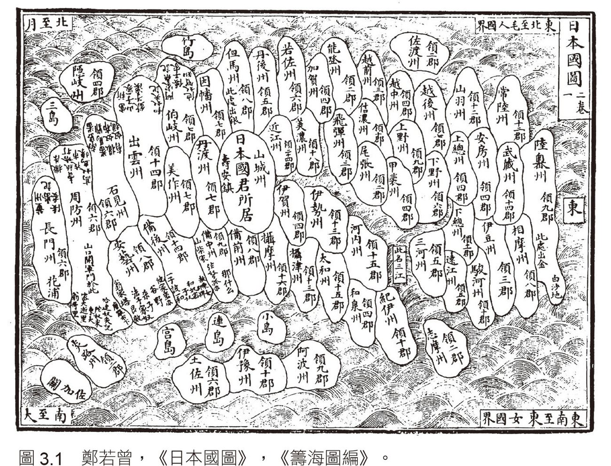
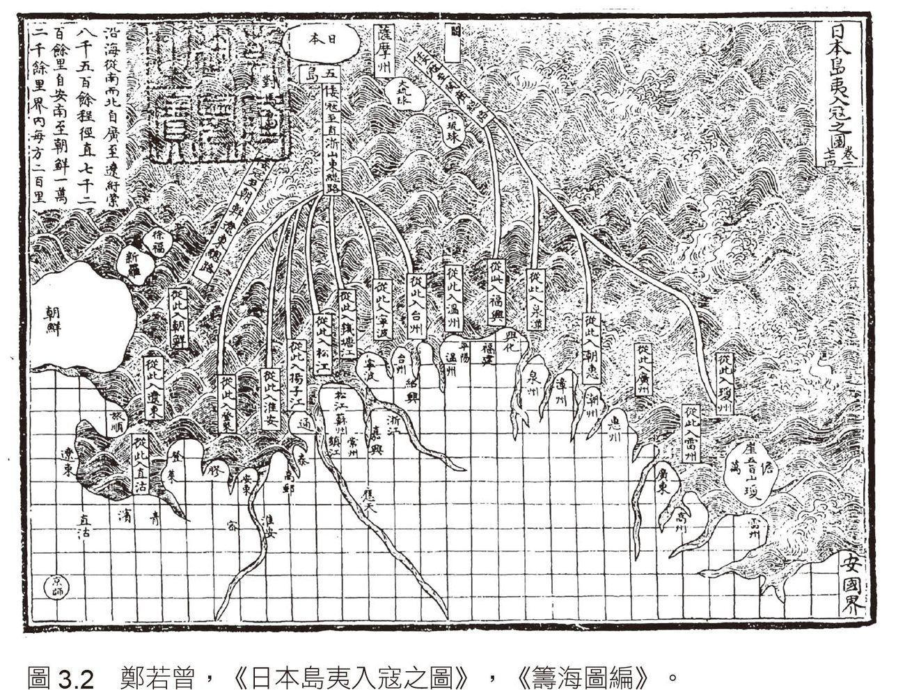
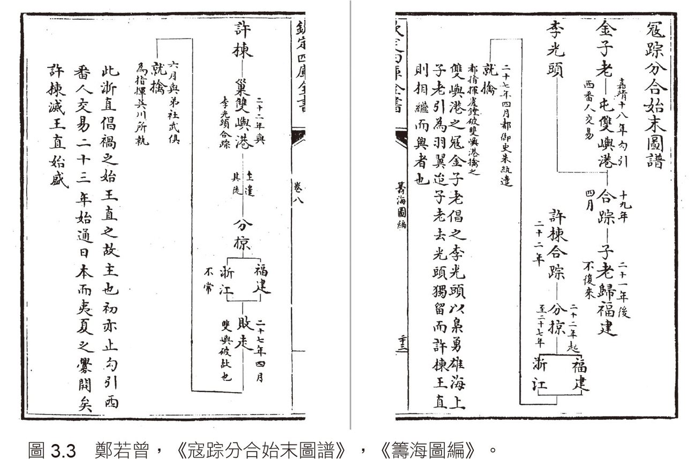
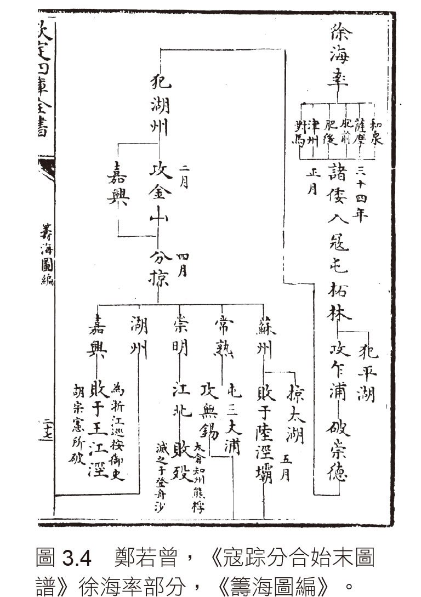
沿海营汛界址图 · 第四章「制图师」
原书第四章收录图 4.1–4.14，出自大英图书馆、大英博物馆与澳大利亚国家图书馆藏本；此处选介九幅。
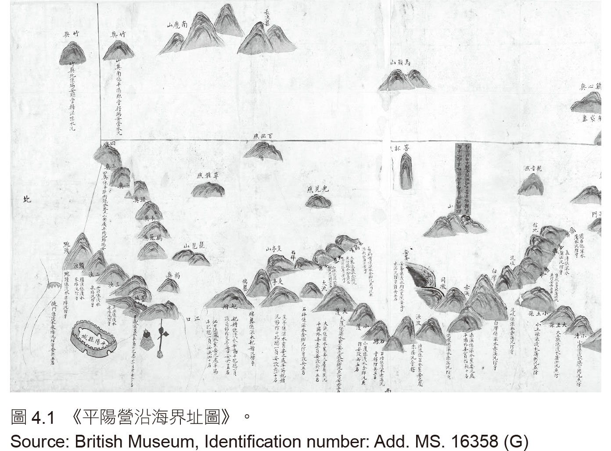
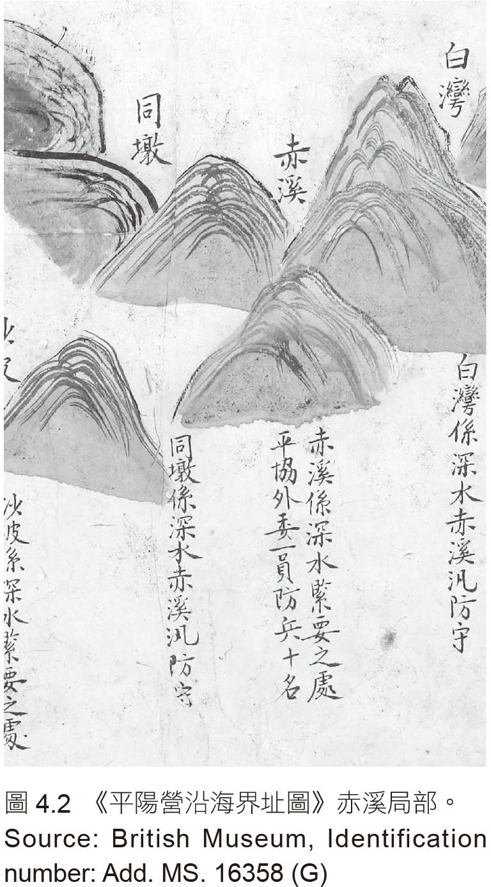
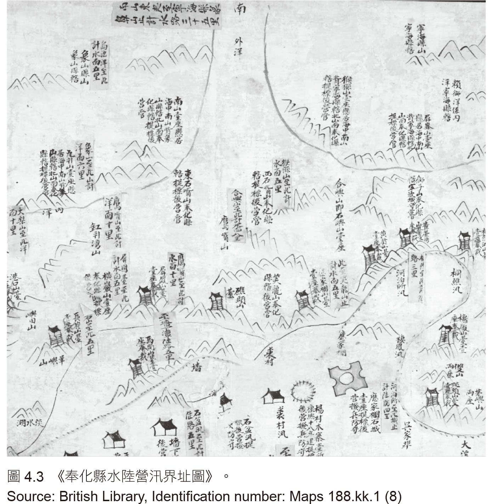
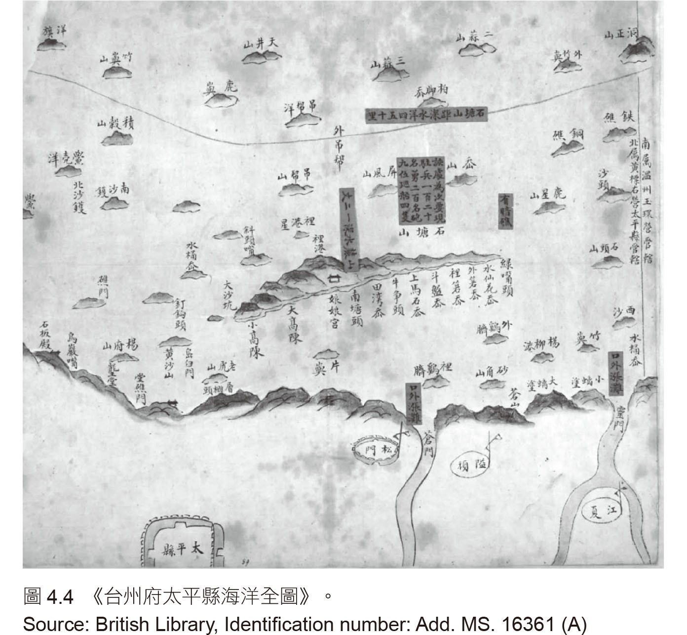
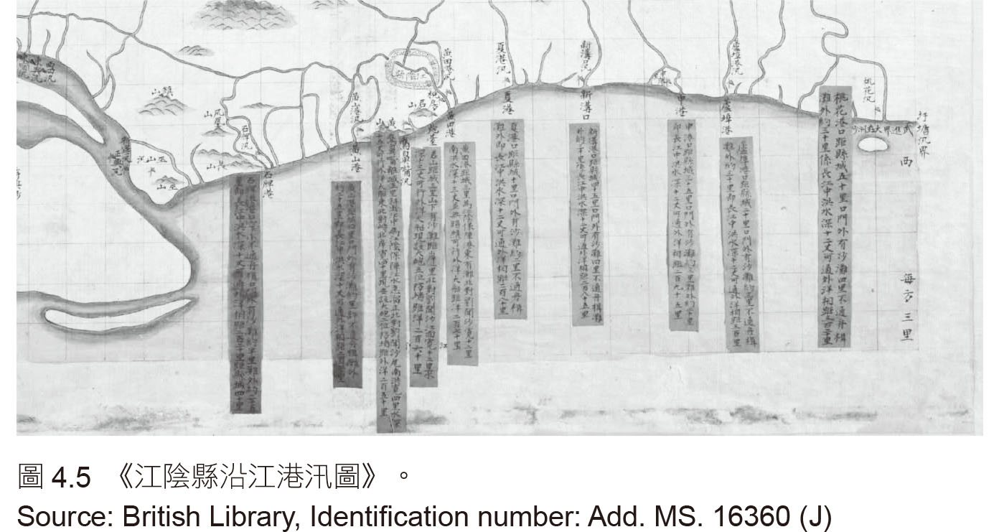
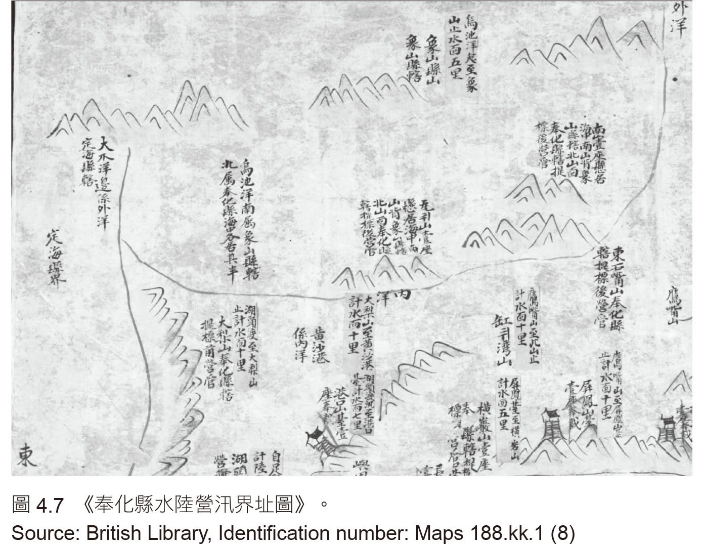
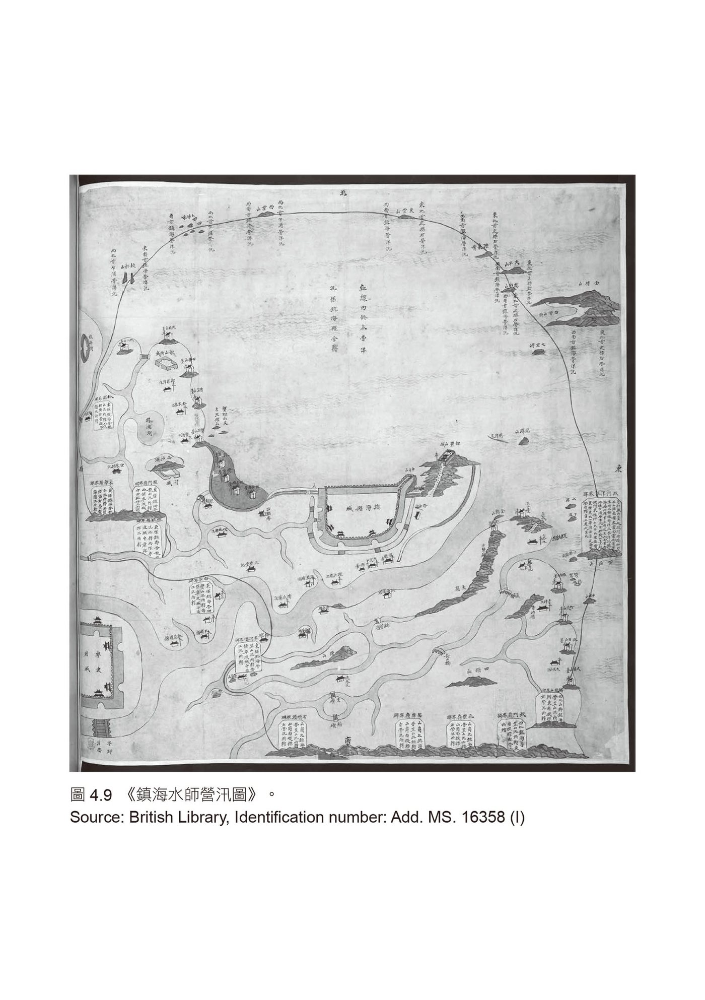
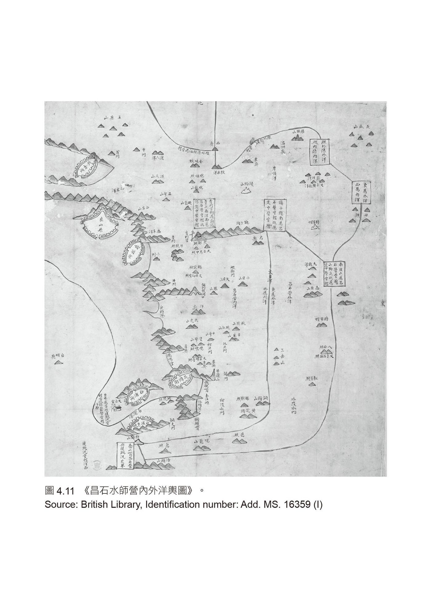
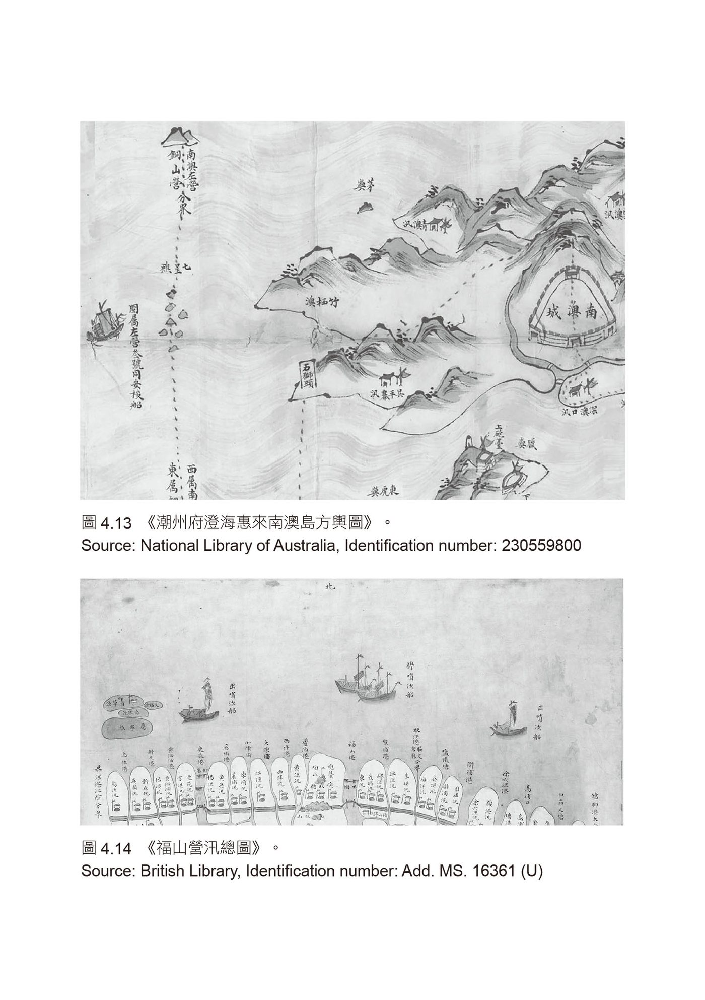
延伸阅读
想继续往下读的几条线。
布琮任，《海不揚波：清代中國與海洋亞洲》
作者自己的前一部中文著作，与本书同属一个研究脉络，可先读它建立清代海洋亚洲的背景。
Ronald C. Po, The Blue Frontier: Maritime China in the Qing Empire
英文专书，主张鸦片战争之前清朝已与海疆有政治、经济与观念上的往来；中文版《藍色邊疆：東亞海域中的清朝方略》由台大出版中心于 2024 年出版。
卜正民（Timothy Brook），Great State: China and the World
推荐序作者的著作，提出明朝的对外关系「循蒙古的『大国』模式而来」，是理解本书清代重心的背景。
麦柯丽（Melissa Macauley），《遙遠的海岸：中國海疆上的殖民擴張》
结论章点名对话的著作，讨论潮州人约六百万劳工的双向循环与侨汇，把海疆放进全球殖民经济的脉络里。
罗荣邦（Lo Jung-pang），China as a Sea Power, 1127–1368
由 Bruce A. Elleman 整理出版，讨论宋代至元代中国的海上力量，常被用来对照「中国不是海洋国家」的成见。